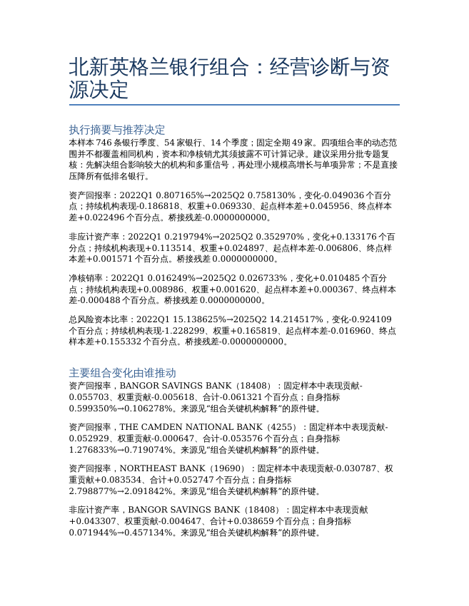
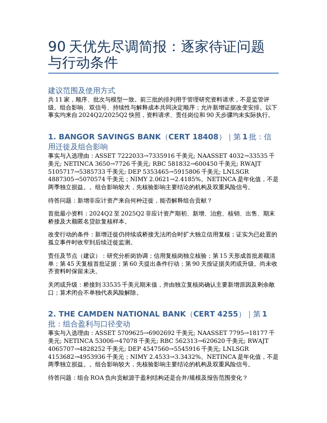

北新英格兰银行组合风险诊断与90天尽调安排
已改写并通过数值与文件一致性检查；参考答案和三模型尚未按新版评分，未认定正式通过。
完整题面
北新英格兰银行组合风险诊断与90天尽调安排
你是受托研究美国北新英格兰地区银行的高级财务分析师。管理层希望依据随附公开快照，判断2022年3月31日至2025年6月30日样本银行的经营和风险变化，并决定未来90天先核验哪些机构、哪些原因。复核资源有限，报告需要支持取舍，不能只是把几个比率从高到低排列。
工作目标
先建立可复核的银行季度模型，核对财务原快照与补充快照的键、重合字段和覆盖；保留银行季度身份，不用较晚机构表的当前状态回填历史。说明经营、信用、资本和资金指标的定义、期间、单位及不可计算情形。
管理层需要看到样本整体资产回报率、非应计资产率、净核销率和总风险资本比率。组合指标应有对应的分子、分母和可计算覆盖；等权银行平均可以另列，但应与组合口径区分。不要把不同含义的指标混名使用。
解释组合变化来自哪里：持续机构自身指标变化、机构规模权重变化，以及样本进出或可计算范围变化分别贡献多少。方法不限定，但桥接应回到总变动。指出对重要组合变化影响较大的机构，并结合银行层面金额和分母解释，不能把组合归因表与经营诊断割裂。
结合盈利、资本、信用、资金、贷款结构和增长形成经营判断。用跨期证据识别持续落后机构，并至少提供一种有业务依据的同业比较。对重要判断比较竞争性解释：现有材料支持哪一种、排除了哪一种简单说法、什么仍需查证。公开比率和算术分解不足以直接证明违约、并购、挤兑或某项管理原因。
提出一个有证据支持的优先尽调范围，说明它为什么比另一种资源安排更值得先做。范围和机构数量由你决定，不要求固定名单。所选机构应逐家有明确的待答问题、首批最小资料请求、责任岗位建议、90天内的检查节点、会改变建议的观察条件，以及关闭或升级问题所需的证据。可以按同类问题组织工作，但必须明确对应到各机构。
随附材料
全部材料位于/app/input_files/，均为真实公开原件。
| 文件 | 用途 |
|---|---|
fdic_financials_VT_NH_ME_2022_2025.csv |
银行季度原始财务快照 |
fdic_financials_supplement_official.csv |
同范围官方补充快照，提供原快照未含的指标和分母；合并前核对键和重合字段 |
fdic_institutions_VT_NH_ME.csv |
较晚机构快照，用于身份核对，不直接代表每个历史季度的状态 |
financial_definitions.yaml |
FDIC财务字段、公式、期间和单位的官方定义，可作为文本阅读 |
institution_definitions.yaml |
FDIC机构字段官方定义，可作为文本阅读 |
FDIC_RMS_Manual_3.2_Loans.pdf |
贷款审查与独立复核原则，使用时说明文件版本和适用边界 |
OCC_Rating_Credit_Risk.pdf |
信用风险评级原则，使用时说明适用边界 |
交付物
regional_bank_risk_model.xlsx：可复核的覆盖、机构对应、季度指标、组合结果、变化桥接、重要机构贡献、持续性与同业比较，以及优先尽调依据。保留关键原始分子分母和原件位置；让复核者可以重算，不要求特定工作表名称或编程语言。
operating_performance_diagnosis.docx：中文经营诊断。执行摘要呈现四项组合指标、主要变化和推荐决定；正文把组合变化与关键机构联系起来，给出竞争解释、持续落后与同业比较、推荐方案和替代方案的比较，以及结论边界。
priority_follow_up_brief.docx：中文90天尽调简报。给出有顺序或分批的机构范围，逐家写清问题、首批资料、责任岗位、检查节点、改变行动的条件及关闭或升级要求。所有安排均是建议，不是已经执行的事实。
硬约束
只使用随附材料，不联网追加市场观测、内部贷款档案或监管阈值，不修改原件。材料未解释的零分母或缺失值须保持未知，不自行补成真实零风险、零资本或报告制度不适用。
区分年内累计、年化指标与独立季度损益；不同期间数值不能直接相加当作全年表现。所有金额标明单位，比率标明分母；采用替代合法口径时，正确命名并披露覆盖和局限。
同业分组、持续性标准、优先范围和内部监测条件可以由你提出，但须说明业务依据，不能冒充法定门槛或监管评级。建议的责任岗位不代表真实银行已授权，待取得资料不代表已取得，90天安排不代表已执行。
仅在/app/output/提交上述一份XLSX和两份DOCX，文件名逐字一致，不提交加密文件或压缩包。
输入原件
fdic_financials_VT_NH_ME_2022_2025.csv
下载原件 · 186,542 bytes
| CERT | REPDTE | NAMEFULL | ASSET | NAASSET |
|---|---|---|---|---|
| 11971 | 20220331 | BAR HARBOR BANK & TRUST | 3688993 | 9213 |
| 12874 | 20220331 | KATAHDIN TRUST COMPANY | 964163 | 1069 |
| 13063 | 20220331 | KENNEBUNK SAVINGS BANK | 1784835 | 408 |
| 14134 | 20220331 | PASSUMPSIC SAVINGS BANK | 869402 | 8014 |
| 14136 | 20220331 | WELLS RIVER SAVINGS BANK | 222692 | 174 |
| 14140 | 20220331 | NORTHFIELD SAVINGS BANK | 1414510 | 5589 |
fdic_financials_supplement_official.csv
下载原件 · 160,717 bytes
| CERT | REPDTE | NAMEFULL | ASSET | NETINCA | ASSET5 | RBC | RWAJT | NAASSET |
|---|---|---|---|---|---|---|---|---|
| 11971 | 20220331 | BAR HARBOR BANK & TRUST | 3688993 | 41276 | 3697790 | 381949 | 2792237 | 9213 |
| 12874 | 20220331 | KATAHDIN TRUST COMPANY | 964163 | 7916 | 952017.5 | 105628 | 677033 | 1069 |
| 13063 | 20220331 | KENNEBUNK SAVINGS BANK | 1784835 | 8708 | 1805241.5 | 0 | 0 | 408 |
| 14134 | 20220331 | PASSUMPSIC SAVINGS BANK | 869402 | -3388 | 874789 | 99900 | 568551 | 8014 |
| 14136 | 20220331 | WELLS RIVER SAVINGS BANK | 222692 | 444 | 222501.5 | 23784 | 137669 | 174 |
| 14140 | 20220331 | NORTHFIELD SAVINGS BANK | 1414510 | 9324 | 1408190.5 | 0 | 0 | 5589 |
fdic_institutions_VT_NH_ME.csv
下载原件 · 292,401 bytes
| COUNTY | CERT | REPDTE | ASSET |
|---|---|---|---|
| York | 10 | ||
| Strafford | 10022 | ||
| Essex | 10029 | ||
| Aroostook | 11369 | 09/30/1986 | 47781 |
| Cumberland | 11372 | ||
| Coos | 11485 | 03/31/1986 | 29717 |
financial_definitions.yaml
下载原件 · 616,633 bytes
type: object
properties:
data:
type: object
properties:
ACTEVT:
type: string
title: Activity Event Code
description: Structure activity event code. Merger or closing codes only.
x-source-mapping:
- file: RISVIEW
field: ACTEVT
ASSET:
type: number
title: Total assets
description: >-
The sum of all assets owned by the institution including cash,
loans, securities, bank premises and other assets. This total does
not include off-balance-sheet accounts.
x-source-mapping:
- file: RISVIEW
field: ASSET
- file: RISVIEW_MERGED
field: L_ASSET
BRANCH:
type: number
title: BRANCHING
description:
A flag used to indicate whether an institution has branches.
0 means no branches and 1 means it has branches.
x-source-mapping:
- file: RISVIEW
field: BRANCH
CALLFORM:
title: Call Form Number
description: TBD
type: number
x-source-mapping:
- file: RISVIEW
field: CALLFORM
- file: RISVIEW_MERGED
field: CALLFORM
CB:
title: Community Bank
description: >-
A flag used to indicate whether an institution is a community bank. 0 = Not a community Bank. 1 = Is a community bank. For more information, visit the community bank research program page: https://www.fdic.gov/community-banking-research-program.
type: string
x-source-mapping:
- file: RISVIEW
field: CB
CBSADIV:
type: number
title: Core Based Statistical Division Number
description:
A metropolitan division is a county or group of counties within a
core based statistical area that contains a population of at least 2.5 million.
A metropolitan division consists of one or more main/secondary countues that
represent an employment center or centers, plus adjacent conuties associated
withe the main county or counties through commuting ties.
x-source-mapping:
- file: RISVIEW
field: CBSADIV
CBSANAME:
type: string
title: Core Based Statistical Division Name
description:
A statistical geographic entity consisting of the county or counties
associated with at least one core (urbanized area or urban cluster) of at least
10,000 population, plus adjacent counties having a high degree of social and
economic integration with the core as measured through commuting ties with
the counties containing the core.
x-source-mapping:
- file: RISVIEW
field: CBSANAME
STMULT:
title: Multi State Offices Flag
description: >-
Multi State Offices Flag
type: string
x-source-mapping:
- file: RISVIEW
field: STMULT
ADDRESS:
title: ADDRESS
description: >-
ADDRESS
type: string
x-source-mapping:
- file: RISVIEW
field: ADDRESS
CBLRIND:
title: Community Bank Ratio
description:
type: number
x-elastic-type: double
x-source-mapping:
- file: RISVIEW
field: CBLRIND
CD1T3:
title: TIME DEP $250,000 OR MORE REMAINING MATURITY REPRICING OF 1-3 YEARS
description:
type: number
x-source-mapping:
- file: RISVIEW
field: CD1T3
CD1T3R:
title: TIME DEP $250,000 OR MORE REMAINING MATURITY REPRICING OF 1-3 YEARS RATIO
description:
type: number
x-elastic-type: double
x-source-mapping:
- formula:
type: percentage
parameters:
setField: CD1T3R
numerator: CD1T3
denominator: ASSET
CD3LES:
title: TIME DEP $250,000 OR MORE REMAINING MATURITY REPRICING OF 3 MONTH OR LESS
description:
type: number
x-source-mapping:
- file: RISVIEW
field: CD3LES
CD3LESR:
title: TIME DEP $250,000 OR MORE REMAINING MATURITY REPRICING OF 3 MONTH OR LESS RATIO
description:
type: number
x-elastic-type: double
x-source-mapping:
- formula:
type: percentage
parameters:
setField: CD3LESR
numerator: CD3LES
denominator: ASSET
CD3LESS:
title: TIME DEP $250,000 OR LESS REMAINING MATURITY REPRICING OF 3 MONTH OR LESS
description:
type: number
x-source-mapping:
- file: RISVIEW
field: CD3LESS
CD3LESSR:
title: TIME DEP $250,000 OR LESS REMAINING MATURITY REPRICING OF 3 MONTH OR LESS RATIO
description:
type: number
x-elastic-type: double
x-source-mapping:
- formula:
type: percentage
parameters:
setField: CD3LESSR
numerator: CD3LESS
denominator: ASSET
CDOV3:
title: TIME DEP $250,000 OR MORE REMAINING MATURITY OR REPRICING OVER 3 YEARS
description:
type: number
x-source-mapping:
- file: RISVIEW
field: CDOV3
CDOV3R:
title: TIME DEP $250,000 OR MORE REMAINING MATURITY OR REPRICING OVER 3 YEARS RATIO
description:
type: number
x-elastic-type: double
x-source-mapping:
- formula:
type: percentage
parameters:
setField: CDOV3R
numerator: CDOV3
denominator: ASSET
CDOV3S:
title: TIME DEP $250,000 OR LESS REMAINING MATURITY OR REPRICING OVER 3 YEARS
description:
type: number
x-source-mapping:
- file: RISVIEW
field: CDOV3S
CDOV3SR:
title: TIME DEP $250,000 OR LESS REMAINING MATURITY OR REPRICING OVER 3 YEARS RATIO
description:
type: number
x-elastic-type: double
x-source-mapping:
- formula:
type: percentage
parameters:
setField: CDOV3SR
numerator: CDOV3S
denominator: ASSET
CD3T12:
title: TIME DEP $250,000 OR MORE REMAINING MATURITY OR REPRICING 3-12 MONTHS
description:
type: number
x-source-mapping:
- file: RISVIEW
field: CD3T12
CD3T12R:
title: TIME DEP $250,000 OR MORE REMAINING MATURITY OR REPRICING 3-12 MONTHS RATIO
description:
type: number
x-elastic-type: double
x-source-mapping:
- formula:
type: percentage
parameters:
setField: CD3T12R
numerator: CD3T12
denominator: ASSET
CD3T12S:
title: TIME DEP $250,000 OR LESS REMAINING MATURITY OR REPRICING 3-12 MONTHS
description:
type: number
x-source-mapping:
- file: RISVIEW
field: CD3T12S
CD3T12SR:
title: TIME DEP $250,000 OR LESS REMAINING MATURITY OR REPRICING 3-12 MONTHS RATIO
description:
type: number
x-elastic-type: double
x-source-mapping:
- formula:
type: percentage
parameters:
setField: CD3T12SR
numerator: CD3T12S
denominator: ASSET
CD1T3S:
title: TIME DEP $250,000 OR LESS REMAINING MATURITY OR REPRICING 1-3 YEARS
description:
type: number
x-source-mapping:
- file: RISVIEW
field: CD1T3S
CD1T3SR:
title: TIME DEP $250,000 OR LESS REMAINING MATURITY OR REPRICING 1-3 YEARS RATIO
description:
type: number
x-elastic-type: double
x-source-mapping:
- formula:
type: percentage
parameters:
setField: CD1T3SR
numerator: CD1T3S
denominator: ASSET
CERT:
title: 'FDIC Certificate #'
description: >-
A unique NUMBER assigned by the FDIC used to identify institutions
and for the issuance of insurance certificates.
type: number
x-source-overwrite: false
x-source-mapping:
- file: RISVIEW
field: CERT
- file: RISVIEW_MERGED
field: C_CERT
- file: VINST_FIN_CUR_SDC
field: ORG_CERT_NUM
CERTCONS:
title: Directly owned by another bank (CERT)
description: >-
FDIC certificate number of the parent bank or savings institution
with which the reported institution’s financial data has been
consolidated. Beginning in March 1997, both the Thrift Financial
Reports and Call Reports are completed on a fully consolidated
basis. Previously, the consolidation of subsidiary depository
institutions was prohibited. Now, parent institutions are required
to file consolidated reports, while their subsidiary financial
institutions are still required to file separate reports. Click on
the certificate number to identify the parent bank or thrift.
type: string
x-source-mapping:
- file: RISVIEW
field: CERTCONS
CITYHCR:
title: City of High Holder
description: >-
City in which the headquarters of the institution's regulatory high
holder are physically located.
type: string
x-elastic-type: keyword
x-elastic-analyzer:
- variable: raw
analyzer: whitespace_analyzer
- variable: autocomplete
analyzer: autocomplete_analyzer
x-source-mapping:
- file: RISVIEW
field: CITYHCR
CLCODE:
title: Classcode
type: number
description: A number that sub-categorizes a major class of institutions. 3 = National bank, Federal Reserve System (FRS) member; 13 = State commercial bank, FRS member; 15 = State savings, co-op, or insdustrial bank, FRS member; 21 = State commercial bank, not FRS member; 23 = State savings, co-op, or industrial bank, not FRS member; 25 = State mutual commercial bank, not FRS member; 33 = Federal chartered stock savings bank; 34 = Federal chartered mutual savings bank; 35 = State chartered stock savings and loan association; 36 = State chartered mutual savings and loan association; 37 = Federal chartered stock savings and loan association; 38 = Federal chartered mutual savings and loan association; 41 = State chartered stock savings bank; 42 = State chartered mutual savings bank; 43 = Federal chartered stock savings bank (historical); 44 = Federal chartered mutual savings bank (historical); 50 = OCC chartered nondeposit and/or noninsured trust companies; 51 = Noninsured commercial bank; 52 = Noninsured domestic offices of foreign bank (International Banking Act); 53 = Noninsured industrial bank; 54 = State chartered nondeposit and/or noninsured trust company, not FRS member; 55 = State chartered domestic branches of foreign banks; 56 = OCC chartered domestic branches of foreign banks; 57 = New York investment company; 58 = State chartered nondeposit and/or noninsured trust company, FRS member; 59 = OTS chartered nondeposit and/or noninsured trust company, 61 = Noninsured private bank; 62 = Noninsured loan workout bank, OCC chartered; 63 = Noninsured loan workout bank, state chartered, FRS member; 64 = Noninsured loan workout bank, state chartered, not FRS member; 65 = Other holding company; 71 = Transfer agent; 81 = Noninsured stock savings bank; 82 = Noninsured mutual savings bank; 85 = Noninsured stock savings and loan association; 86 = Noninsured mutual savings and loan association; 89 = Noninsured insurance company; 91 = State chartered credit unions; 92 = Federal chartered credit unions; 93 = Privately insured state credit union.
x-source-mapping:
- file: RISVIEW
field: CLCODE
CLOSED:
title: Closed Institution Flag
type: number
description:
A flag used to indicate whether an institution has been closed.
0 is institution not closed. 1 is institution closed.
x-source-mapping:
- file: RISVIEW
field: CLOSED
CNTRYALP:
title: FIPS Country Code
type: string
description:
The Federal Information Processing Standards Alphabetic Code of the country in
which the institution is physically located.
x-source-mapping:
- file: RISVIEW
field: CNTRYALP
CNTRYNUM:
title: FIPS Country Number
type: number
description:
The Federal Information Processing Standards Numeric Code of the country in
which the institution is physically located.
x-source-mapping:
- file: RISVIEW
field: CNTRYNUM
CNTYNUM:
title: FIPS County Number
type: number
description:
The Federal Information Processing Standards Numeric Code of the county in
which the institution is physically located.
x-source-mapping:
- file: RISVIEW
field: CNTYNUM
CSA:
title: Combined Statistical Area
type: string
description: >-
U.S. CENSUS BUREAU OFFICE OF MANANGEMENT AND BUDGET DEFINES
THE COMBINED STATISTICAL AREA (CSA) AS A GEOGRAPHIC ENTITY
CONSISTING OF TWO OR MORE ADJACENT CORE BASED STATISTICAL AREAS
(CBSAS) WITH EMPLOYMENT INTERCHANGE MEASURES OF AT LEAST 15.
PAIRS OF CBSAS WITH EMPLOYMENT INTERCHANGE MEASURES OF AT LEAST
25 COMBINE AUTOMATICALLY. PAIRS OF CBSAS WITH EMPLOYMENT
INTERCHANGE MEASURES OF AT LEAST 15, BUT LESS THAN 25, MAY
COMBINE IF LOCAL OPTION IN BOTH AREAS FAVOR COMBINATION.
x-source-mapping:
- file: RISVIEW
field: CSA
DENOVO:
title: Denovo Institution
description: >-
A flag used to indicate whether an institution is a new institution
(not a recharter). This flag is set quarterly. For instance, if
REPDTE is 3/31/98 and DENOVO equals 1, the institution was a denovo
during the first quarter of 1998.
type: string
x-source-mapping:
- file: RISVIEW
field: DENOVO
DEP:
title: Total deposits
description: >-
The sum of all deposits including demand deposits, money market
deposits, other savings deposits, time deposits and deposits in
foreign offices.
type: number
x-source-mapping:
- file: RISVIEW
field: DEP
- file: RISVIEW_MERGED
field: L_DEP
DEPR:
title: TOTAL DEPOSITS RATIO
description:
type: number
x-elastic-type: double
x-source-mapping:
- formula:
type: percentage
parameters:
setField: DEPR
numerator: DEP
denominator: ASSET
DEPDOM:
title: Deposits held in domestic offices
description: >-
The sum of all domestic office deposits, including demand deposits,
money market deposits, other savings deposits and time deposits.
type: number
x-sourinstitution_definitions.yaml
下载原件 · 94,832 bytes
type: object
properties:
data:
type: object
properties:
# LOCN_PHY_CNTY_NUM:
# type: number
# title: TBD
# description: TBD
# x-source-mapping:
# - file: VINST_FIN_CUR_SDC
# field: LOCN_PHY_CNTY_NUM
# LOCN_PHY_ST_NUM:
# type: number
# title: TBD
# description: TBD
# x-source-mapping:
# - file: VINST_FIN_CUR_SDC
# field: LOCN_PHY_ST_NUM
# ORG_ACQ_CERT_NUM:
# type: number
# title: TBD
# description: TBD
# x-source-mapping:
# - file: VINST_FIN_CUR_SDC
# field: ORG_ACQ_CERT_NUM
# INST_FIN_ACTV_FLG:
# type: string
# title: TBD
# description: TBD
# x-source-mapping:
# - file: VINST_FIN_CUR_SDC
# field: INST_FIN_ACTV_FLG
# ORG_TYP_NUM:
# type: string
# title: TBD
# description: TBD
# x-source-mapping:
# - file: VINST_FIN_CUR_SDC
# field: ORG_TYP_NUM
# AGY_CFPB_REGL_EFF_DTE:
# type: string
# title: TBD
# description: TBD
# x-source-mapping:
# - file: VINST_FIN_CUR_SDC
# field: AGY_CFPB_REGL_EFF_DTE
# AGY_CFPB_REGL_END_DTE:
# type: string
# title: TBD
# description: TBD
# x-source-mapping:
# - file: VINST_FIN_CUR_SDC
# field: AGY_CFPB_REGL_END_DTE
# ORG_EFF_NUM_DTE:
# type: string
# title: TBD
# description: TBD
# x-source-mapping:
# - file: VINST_FIN_CUR_SDC
# field: ORG_EFF_NUM_DTE
# ORG_END_NUM_DTE:
# type: string
# title: TBD
# description: TBD
# x-source-mapping:
# - file: VINST_FIN_CUR_SDC
# field: ORG_END_NUM_DTE
# INST_FIN_ESTB_DTE:
# type: string
# title: TBD
# description: TBD
# x-source-mapping:
# - file: VINST_FIN_CUR_SDC
# field: INST_FIN_ESTB_DTE
# POL_1_INS_BEG_DTE:
# type: string
# title: TBD
# description: TBD
# x-source-mapping:
# - file: VINST_FIN_CUR_SDC
# field: POL_1_INS_BEG_DTE
# REPDTE_RAW:
# title: Report Date
# description: The last day of the financial reporting period selected.
# type: string
# x-source-mapping:
# - file: RISVIEW
# field: REPDTE
# ZIP_RAW:
# title: Zip Code
# description: >-
# The first three, four, or five digits of the full postal zip code
# representing physical location of the institution or its branch
# office.
# type: string
# x-source-mapping:
# - file: VINST_FIN_CUR_SDC
# field: LOCN_PHY_POST_CDE
LEI:
title: LEGAL ENTITY IDENTIFIER
description: A unique identifier regulated by the Global LEI Foundation.
type: string
x-source-mapping:
- file: RISVIEW_CUR
field: LEI
ACTIVE:
type: number
title: Institution Status
description: >-
A number indicating the status of an institution. 1='Institutions that are currently open and insured by the FDIC'; 0='Institution closed or not insured by FDIC'
x-source-mapping:
- formula:
type: raw
parameters:
script: |
if(ctx.INST_FIN_ACTV_FLG?.toLowerCase() == "y") {
ctx.ACTIVE = 1;
} else {
ctx.ACTIVE = 0;
}
ADDRESS:
type: string
title: Street Address
description: >-
The street address in which an institution or branch office is physically located.
x-source-mapping:
- file: VINST_FIN_CUR_SDC
field: LOCN_PHY_LNE1_TXT
ASSET:
type: number
title: Total assets
description: >-
The sum of all assets owned by the institution including cash,
loans, securities, bank premises and other assets. This total does
not include off-balance-sheet accounts.
x-source-mapping:
- file: RISVIEW
field: ASSET
BKCLASS:
title: Institution Class
enum:
- 'N'
- SM
- NM
- SB
- SA
- OI
description: >-
A classification code assigned by the FDIC based on the institution's charter type (commercial bank or savings institution), charter agent (state or federal), Federal Reserve membership status (Fed member, Fed non-member) and its primary federal regulator (state chartered institutions are subject to both federal and state supervision). N - Commercial bank, national (federal) charter, Fed member, and supervised by the Office of the Comptroller of the Currency (OCC); NM - Commercial bank, state charter, Fed non-member, and supervised by the Federal Deposit Insurance Corporation (FDIC); OI - Insured U.S. branch of a foreign chartered institution (IBA) and supervised by the OCC or FDIC; SB – Federal savings banks, federal charter, supervised by the OCC or before July 21,2011 the Office of Thrift Supervision (OTS); SI - State chartered stock savings banks, supervised by the FDIC; SL - State chartered stock savings and loan associations, supervised by the FDIC or before July 21,2011 the OTS; SM - Commercial bank, state charter, Fed member, and supervised by the Federal Reserve Bank (FRB); NC – Noninsured non-deposit commercial banks and/or trust companies regulated by the OCC, a state, or a territory; NS - Noninsured stock savings bank supervised by a state or territory; CU - state or federally chartered credit unions supervised by the National Credit Union Association (NCUA).
type: string
x-source-mapping:
- file: VINST_FIN_CUR_SDC
field: INST_CLASS_CDE
CB:
title: Community Bank
description: >-
A flag used to indicate whether an institution is a community bank. 0 = Not a community Bank. 1 = Is a community bank. For more information, visit the community bank research program page: https://www.fdic.gov/community-banking-research-program.
type: string
x-source-mapping:
- file: RISVIEW
field: CB
CBSA:
title: Core Based Statistical Area Name
description: >-
Name of the Core Based Statistical Area (CBSA) as defined by the US Census Bureau Office of Management and Budget.
type: string
x-source-mapping:
- file: RELATION
field: CBSANAME
CBSA_DIV:
title: Metropolitan Divisions Name
description: >-
Name of the Core Based Statistical Division as defined by the US Census Bureau Office of Management and Budget.
type: string
x-source-mapping:
- file: RELATION
field: CBSA_DIV_NAME
CBSA_DIV_FLG:
title: Metropolitan Divisions Flag
description: >-
A flag (1=Yes) indicating member of a Core Based Statistical Division as defined by the US Census Bureau Office of Management and Budget.
type: string
x-source-mapping:
- file: RELATION
field: DIVISION_FLAG
CBSA_DIV_NO:
title: Metropolitan Divisions Number
description: >-
Numeric code of the Core Based Statistical Division as defined by the US Census Bureau Office of Management and Budget.s
type: string
x-source-mapping:
- file: RELATION
field: CBSA_DIVISION
CBSA_METRO:
title: Metropolitan Division Number
description: >-
Numeric code of the Metropolitan Statistical Area as defined by the US Census Bureau Office of Management and Budget
type: string
x-source-mapping:
- formula:
type: raw
parameters:
script: |
if(ctx.CBSA_METRO_FLG == "1") {
ctx.CBSA_METRO = ctx.CBSA_NO;
} else {
ctx.CBSA_METRO = 0;
}
CBSA_METRO_FLG:
title: Metropolitan Division Flag
description: >-
A flag (1=Yes) used to indicate whether an branch is in a Metropolitan Statistical Area as defined by the US Census Bureau Office of Management and Budget
type: string
x-source-mapping:
- file: RELATION
field: METRO_FLAG
CBSA_METRO_NAME:
title: Metropolitan Division Name
description: >-
Name of the Metropolitan Statistical Area as defined by the US Census Bureau Office of Management and Budget
type: string
x-source-mapping:
- formula:
type: raw
parameters:
script: |
if(ctx.CBSA_METRO_FLG == "1") {
ctx.CBSA_METRO_NAME = ctx.CBSA;
} else {
ctx.CBSA_METRO_NAME = 0;
}
CBSA_MICRO_FLG:
title: Micropolitan Division Flag
description: >-
A flag (1=Yes) used to indicate whether an branch is in a Metropolitan Statistical Area as defined by the US Census Bureau Office of Management and Budget
type: string
x-source-mapping:
- file: RELATION
field: MICRO_FLAG
CBSA_NO:
title: Core Based Statistical Areas
description: >-
Numeric code of the Core Based Statistical Area (CBSA) as defined by the US Census Bureau Office of Management and Budget.
type: string
x-source-mapping:
- file: RELATION
field: CBSA
CERT:
title: 'FDIC Certificate #'
description: >-
A unique NUMBER assigned by the FDIC used to identify institutions
and for the issuance of insurance certificates.
type: string
x-source-mapping:
- file: VINST_FIN_CUR_SDC
field: ORG_CERT_NUM
CERTCONS:
title: Directly owned by another bank (CERT)
description: >-
FDIC certificate number of the parent bank or savings institution
with which the reported institution’s financial data has been
consolidated. Beginning in March 1997, both the Thrift Financial
Reports and Call Reports are completed on a fully consolidated
basis. Previously, the consolidation of subsidiary depository
institutions was prohibited. Now, parent institutions are required
to file consolidated reports, while their subsidiary financial
institutions are still required to file separate reports. Click on
the certificate number to identify the parent bank or thrift.
type: string
x-source-mapping:
- file: RISVIEW
field: CERTCONS
CFPBEFFDTE:
title: CFPB Effective Date
description: Date the institution began secondary supervision by CFPB
type: string
format: date-time
x-source-mapping:
- formula:
type: date
parameters:
inputFormat: "yyyy-MM-dd'T'HH:mm:ss"
outputFormat: 'yyyy-MM-dd'
inputField: AGY_CFPB_REGL_EFF_DTE
outputField: CFPBEFFDTE
CFPBENDDTE:
title: CFPB End Date
description: Date the institution ended supervision by CFPB
type: string
format: date-time
x-source-mapping:
- formula:
type: date
parameters:
inputFormat: "yyyy-MM-dd'T'HH:mm:ss"
outputFormat: 'yyyy-MM-dd'
inputField: AGY_CFPB_REGL_END_DTE
outputField: CFPBENDDTE
CFPBFLAG:
title: CFPB Flag
description: >-
Indicates secondary supervision by CFPB ('0' - not supervised by
CFPB, '1'- secondarily supervised by CFPB)
type: string
x-source-mapping:
- formula:
type: raw
parameters:
script: |
if(ctx.REGAGENT2?.toLowerCase() == "cfpb" && ctx.CFPBENDDTE?.toString() == "31-Dec-99") {
ctx.CFPBFLAG = 1;
} else {
ctx.CFPBFLAG = 0
}
PRIORNAME1:
title: Previous Name 1
description: >-
Previous Name of Institution 1
type: string
x-source-mapping:
- formula:
type: raw
parameters:
script: |
if(ctx.EVENTS !== null ) {
List uniqNameList = new ArrayList();
for (int i = 0; i < ctx.EVENTS.length; ++i) {
if(!uniqNameList.contains(ctx.EVENTS[i].NAME) && ctx.NAME != ctx.EVENTS[i].NAME) {
uniqNameList.add(ctx.EVENTS[i].NAME);
}
}
for (int a = 0; a < uniqNameList.length; ++a) {
String priorNameProperty = "PRIORNAME" + (a+1);
ctx[priorNameProperty] = uniqNameList[a];
}
}
PRIORNAME2:
title: Previous Name 2
description: >-
Previous Name of Institution 2
notes: See PRIORNAME1 for transformation
PRIORNAME3:
title: Previous Name 3
description: >-
Previous Name of Institution 3
notes: See PRIORNAME1 for transformation
PRIORNAME4:
title: Previous Name 4
description: >-
Previous Name of Institution 4
notes: See PRIORNAME1 for transformation
PRIORNAME5:
title: Previous Name 5
description: >-
Previous Name of Institution 5
notes: See PRIORNAME1 for transformation
PRIORNAME6:
title: Previous Name 6
description: >-
Previous Name of Institution 6
notes: See PRIORNAME1 for transformation
PRIORNAME7:
title: Previous Name 7
description: >-
Previous Name of Institution 7
notes: See PRIORNAME1 for transformation
PRIORNAME8:
title: Previous Name 8
description: >-
Previous Name of Institution 8
notes: See PRIORNAME1 for transformation
PRIORNAME9:
title: Previous Name 9
description: >-
Previous Name of Institution 9
notes: See PRIORNAME1 for transformation
PRIORNAME10:
title: Previous Name 10
description: >-
Previous Name of Institution 10
notes: See PRIORNAME1 for transformation
CHANGEC1:
title: Change Code
description: >-
FDIC code used to signify a structural event relating to an institution.
type: string
x-source-mapping:
- formula:
type: raw
parameters:
script: |
if(ctx.EVENTS !== null ) {
List changeCodeList = new ArrayList();
String[] codeList = new String[] {"1", "110", "150", "211", "212", "213", "215", "216", "217", "221", "222", "223", "225", "230", "231", "235", "240", "350", "360", "410", "411", "430", "440", "470", "510", "520", "610", "810", "811", "812", "820", "830"};
List includeCodeList = Arrays.asList(codeList);
for (int i = 0; i < ctx.EVENTS.length; ++i) {
if (ctx.EVENTS[i].EFFDATE == ctx.ORG_EFF_NUM_DTE &&
ctx.EVENTS[i].ENDEFYMD == ctx.ORG_END_NUM_DTE &&
includeCodeList.contains(Integer.toString(ctx.EVENTS[i].ACT_EVT_NUM))) {
参考产出
operating_performance_diagnosis.docx

完整正文
北新英格兰银行组合：经营诊断与资源决定
执行摘要与推荐决定
本样本746条银行季度、54家银行、14个季度；固定全期49家。四项组合率的动态范围并不都覆盖相同机构，资本和净核销尤其须披露不可计算记录。建议采用分批专题复核：先解决组合影响较大的机构和多重信号，再处理小规模高增长与单项异常；不是直接压降所有低排名银行。
资产回报率：2022Q1 0.807165%→2025Q2 0.758130%，变化-0.049036个百分点；持续机构表现-0.186818、权重+0.069330、起点样本差+0.045956、终点样本差+0.022496个百分点。桥接残差-0.0000000000。
非应计资产率：2022Q1 0.219794%→2025Q2 0.352970%，变化+0.133176个百分点；持续机构表现+0.113514、权重+0.024897、起点样本差-0.006806、终点样本差+0.001571个百分点。桥接残差0.0000000000。
净核销率：2022Q1 0.016249%→2025Q2 0.026733%，变化+0.010485个百分点；持续机构表现+0.008986、权重+0.001620、起点样本差+0.000367、终点样本差-0.000488个百分点。桥接残差0.0000000000。
总风险资本比率：2022Q1 15.138625%→2025Q2 14.214517%，变化-0.924109个百分点；持续机构表现-1.228299、权重+0.165819、起点样本差-0.016960、终点样本差+0.155332个百分点。桥接残差-0.0000000000。
主要组合变化由谁推动
资产回报率，BANGOR SAVINGS BANK（18408）：固定样本中表现贡献-0.055703、权重贡献-0.005618、合计-0.061321个百分点；自身指标0.599350%→0.106278%。来源见“组合关键机构解释”的原件键。
资产回报率，THE CAMDEN NATIONAL BANK（4255）：固定样本中表现贡献-0.052929、权重贡献-0.000647、合计-0.053576个百分点；自身指标1.276833%→0.719074%。来源见“组合关键机构解释”的原件键。
资产回报率，NORTHEAST BANK（19690）：固定样本中表现贡献-0.030787、权重贡献+0.083534、合计+0.052747个百分点；自身指标2.798877%→2.091842%。来源见“组合关键机构解释”的原件键。
非应计资产率，BANGOR SAVINGS BANK（18408）：固定样本中表现贡献+0.043307、权重贡献-0.004647、合计+0.038659个百分点；自身指标0.071944%→0.457134%。来源见“组合关键机构解释”的原件键。
非应计资产率，NORTHEAST BANK（19690）：固定样本中表现贡献-0.014306、权重贡献+0.032392、合计+0.018087个百分点；自身指标1.143721%→0.818192%。来源见“组合关键机构解释”的原件键。
非应计资产率，THE CAMDEN NATIONAL BANK（4255）：固定样本中表现贡献+0.017398、权重贡献+0.000485、合计+0.017882个百分点；自身指标0.082338%→0.263332%。来源见“组合关键机构解释”的原件键。
净核销率，NORTHEAST BANK（19690）：固定样本中表现贡献+0.007998、权重贡献+0.002303、合计+0.010300个百分点；自身指标-0.020882%→0.137738%。来源见“组合关键机构解释”的原件键。
净核销率，COMMUNITY NATIONAL BANK（6271）：固定样本中表现贡献-0.006653、权重贡献-0.000013、合计-0.006666个百分点；自身指标0.393338%→0.015782%。来源见“组合关键机构解释”的原件键。
净核销率，BAR HARBOR BANK & TRUST（11971）：固定样本中表现贡献+0.002228、权重贡献-0.000023、合计+0.002205个百分点；自身指标-0.014630%→0.020998%。来源见“组合关键机构解释”的原件键。
总风险资本比率，NORTHEAST BANK（19690）：固定样本中表现贡献-0.392420、权重贡献+0.887205、合计+0.494786个百分点；自身指标20.601954%→14.696581%。来源见“组合关键机构解释”的原件键。
总风险资本比率，BANGOR SAVINGS BANK（18408）：固定样本中表现贡献-0.270476、权重贡献-0.066453、合计-0.336929个百分点；自身指标13.123308%→11.148900%。来源见“组合关键机构解释”的原件键。
总风险资本比率，BAR HARBOR BANK & TRUST（11971）：固定样本中表现贡献+0.003951、权重贡献-0.132680、合计-0.128729个百分点；自身指标13.678961%→13.723581%。来源见“组合关键机构解释”的原件键。
BANGOR和CAMDEN对ROA存在显著负向固定样本贡献。NORTHEAST自身ROA下降，但较高ROA业务的权重扩大可以对组合产生正向权重贡献，不能因此写成该行盈利能力已经改善。非应计资产率也可能同时受到某家自身问题变化和权重变化影响；必须与全体样本桥接共同解释。
表中是会计算术归因，起终点样本差包括范围/适用性变化，不证明机构进入、退出或变化就是并购。主要机构的业务原因仍需资料，不把固定样本贡献当作全部动态变化。
信用、资本、盈利的竞争解释
信用：BANGOR非应计资产4032→33535千美元，资产7222033→7335916千美元；非应计金额增加而资产亦增长，反对“全部由资产分母收缩造成”的说法。新增违约、存量迁徙、处置或范围变化需要贷款桥接后区分。UNION和WALDEN也有实际金额增加，不能只用比率变化大小排序资源。
资本：BANGOR RBC 581832→600450、RWA 5105717→5385733千美元；UNION RBC 121026→124743、RWA 921495→988186千美元。两者资本率下降时资本金额反而增长，直接可核的解释是分母增长更快，不是资本损失。LEDYARD RBC 87737→85991而RWA 609385→692019千美元，分子下降和分母增加都需解释；同步的贷款增长不直接证明因果。
盈利：FIRST SEACOAST NETINCA 1730→-2286千美元而NIMY 2.107948→2.325611%，非应计资产141→14千美元，现有观察不支持把全部盈利压力归为息差收窄或已观测信用恶化。BRATTLEBORO NETINCA 2032→-932千美元而NIMY 3.681000→4.008649%；应核对拨备、非息费用和一次性项目。以上NETINCA为年化期间指标，不当作独立季度现金损失。
资金与结构：BRATTLEBORO存款254557→248250而总贷款202274→208887千美元，可要求资金来源和期限结构。贷款/存款不是法定流动性比率，不能直接据此认定挤兑。LNRE为广义房地产，需取得细分后才能评估商业地产类型集中度。
持续性与同业比较
定义持续盈利落后为完整覆盖4个6月同季、且每期ROA严格低于当期动态样本银行ROA中位数；识别10家：17743 SACO & BIDDEFORD SAVINGS INSTITUTION；18031 WOODSVILLE GUARANTY SAVINGS BANK；27824 SALEM CO-OPERATIVE BANK；28155 PROFILE BANK；28288 AUBURN SAVINGS BANK, FSB；28369 ROCKLAND SAVINGS BANK, FSB；29636 FIRST FEDERAL SAVINGS AND LOAN ASSOCIATION OF BATH；29744 FIRST SEACOAST BANK；30878 BAR HARBOR SAVINGS AND LOAN ASSOCIATION；59176 THE MILLYARD BANK。本定义是样本相对筛查，不代表亏损或监管评级。缺期不当作落后或改善，使用同季避免年内累计指标的季节口径错配。
当前同业分别按历史财务州及期末资产规模分组；规模分界为本样本资产中位数862811千美元，中位数相等归较小组。组内中位数包含本机构，工作簿逐指标披露可计算银行数及偏离值。单一州或规模不能控制所有商业模式差异，不将其当作因果基准。
优先范围、顺序及机会成本
优先范围先保留非应计资产率同比变化前5、末期ROA最低3和可计算资本率最低3的并集，再加入对ROA固定样本总贡献绝对值靠前的CAMDEN，以及净核销变化贡献突出的NORTHEAST，共11家。信号阈值及该范围为内部研究安排，不是监管门槛；其他透明且有证据的选择也可成立。
第一批BANGOR、CAMDEN、NORTHEAST、UNION优先解释对组合结论影响较大或多信号重叠的问题；第二批LEDYARD、FIRST SEACOAST、BRATTLEBORO、SALEM开展资本或盈利专题；第三批WALDEN、FRANKLIN、NORTHFIELD维持定点核验，防止小规模的大百分比变化占用全部资源。第三批不等于无风险；需要新证据时允许提前。
方案A对所有期末机构平均发出统一全套资料请求，覆盖较广，但会将尚未显现重大问题的机构与主要贡献机构放在同一队列。方案B按上述分批，仅索回答具体问题的首批资料，减少无差别请求，代价是未入选机构只能靠后续季度监测发现新问题。建议B，并保留其余样本的四指标和资料可得性监测；有新增重大信号即可调整队列。未虚构团队人数或已有预算。
90天建议与独立复核边界
逐家问题、最小资料、观察触发条件、建议责任岗位及关闭证据见配套简报与模型“有序跟进”页，11家逐项对应。第一批第15天形成首批差额清单，其余第30天；第45天复核，第60天形成条件行动，第90天依据证据关闭或升级。资料缺失不等于问题关闭。
问题的算术来源已解释和风险已经解除是不同结论。由风险资产扩张造成的资本率下降，即使桥接闭合仍可能要求前瞻资本计划；真实迁徙已解释也不代表信用风险消失。岗位和动作均是建议，不代表真实银行授权或实际实施。
指标、来源和权限边界
ROA用NETINCA/ASSET5；非应计资产率用NAASSET/ASSET；净核销用年化NTLNLSA/平均贷款LNLSGR5；总风险资本用RBC/RWAJT，组合分别求分子分母之和。NCLNLSR为非应计贷款率，不是净核销。NTLNLS是年内累计，不能跨季度相加；负核销值可以是净收回。
227个银行季度RWAJT=0、13个LNLSGR5=0，相关指标保持不可计算，制度适用性原因待核验；不补为真实0%。较晚机构表的ACTIVE状态不回填历史。
FDIC Loans PDF第3-4页不提供统一贷款比率门槛，OCC PDF第3页说明评级系统应适配业务复杂度。手册指导只用于设计核验问题，不足以替代监管评级。贷款手册和机构表晚于研究截点，研究为回顾分析；不宣称还原2025年当时可得信息，不外推全国。
priority_follow_up_brief.docx

完整正文
90天优先尽调简报：逐家待证问题与行动条件
建议范围及使用方式
共11家，顺序、批次与模型一致。前三批的排列用于管理研究资料请求，不是监管评级。组合影响、双信号、持续性与解释成本共同决定顺序；允许新增证据改变安排。以下事实均来自2024Q2/2025Q2快照，资料请求、责任岗位和90天步骤均未实际执行。
1. BANGOR SAVINGS BANK（CERT 18408）｜第1批：信用迁徙及组合影响
事实与入选理由：ASSET 7222033→7335916千美元; NAASSET 4032→33535千美元; NETINCA 3650→7726千美元; RBC 581832→600450千美元; RWAJT 5105717→5385733千美元; DEP 5353465→5915806千美元; LNLSGR 4887305→5070574千美元；NIMY 2.0621→2.4185%。NETINCA是年化值，不是两季独立损益。。组合影响较大，先核验影响主要结论的机构及双重风险信号。
待答问题：新增非应计资产来自何种迁徙，能否解释组合贡献？
首批最小资料：2024Q2至2025Q2非应计资产期初、新增、治愈、核销、出售、期末桥接及大额匿名贷款复核样本。
改变行动的条件：新增迁徙仍持续或桥接无法闭合时扩大独立信用复核；证实为已处置的孤立事件时收窄到后续迁徙监测。
责任及节点（建议）：研究分析岗协调；信用复核岗独立核验；第15天形成首批差额清单；第45天复核首批证据；第60天提出条件行动；第90天按证据关闭或升级。尚未收齐资料时保留未决。
关闭或升级：桥接到33535千美元期末值，并由独立复核岗确认主要新增原因及剩余敞口；算术闭合不单独代表风险解除。
2. THE CAMDEN NATIONAL BANK（CERT 4255）｜第1批：组合盈利与口径变动
事实与入选理由：ASSET 5709625→6902692千美元; NAASSET 7795→18177千美元; NETINCA 53006→47078千美元; RBC 562313→620620千美元; RWAJT 4065707→4828252千美元; DEP 4547560→5545916千美元; LNLSGR 4153682→4953936千美元；NIMY 2.4533→3.3432%。NETINCA是年化值，不是两季独立损益。。组合影响较大，先核验影响主要结论的机构及双重风险信号。
待答问题：组合ROA负向贡献源于盈利结构还是合并/规模及报告范围变化？
首批最小资料：2022Q1和2025Q2年化损益/平均资产桥接、期间报告范围变更说明及2024Q2至2025Q2损益变化。
改变行动的条件：解释集中于合并或一次性项目时先作同口径复算；同口径经常盈利仍恶化时转为盈利专项。
责任及节点（建议）：研究分析岗协调；财务/资本专题复核岗核验；第15天形成首批差额清单；第45天复核首批证据；第60天提出条件行动；第90天按证据关闭或升级。尚未收齐资料时保留未决。
关闭或升级：明确报告范围差异并将损益和平均资产对回快照；未取得范围证据时不写成并购已被证实。
3. NORTHEAST BANK（CERT 19690）｜第1批：权重变化与信用损失
事实与入选理由：ASSET 3132203→4279069千美元; NAASSET 28260→35011千美元; NETINCA 58008→87792千美元; RBC 403256→539964千美元; RWAJT 2720493→3674079千美元; DEP 2362286→3405883千美元; LNLSGR 2761157→3790157千美元；NIMY 5.0897→4.8866%。NETINCA是年化值，不是两季独立损益。。组合影响较大，先核验影响主要结论的机构及双重风险信号。
待答问题：自身比率变化与组合权重效应为什么方向不同，净核销变化是否集中？
首批最小资料：2022Q1至2025Q2平均贷款与RWA结构桥接、2025H1净核销/收回明细及新增业务结构。
改变行动的条件：增长由不同业务结构解释时改用同口径监测；损失向新增业务集中时扩大对该批次复核。
责任及节点（建议）：研究分析岗协调；信用复核岗独立核验；第15天形成首批差额清单；第45天复核首批证据；第60天提出条件行动；第90天按证据关闭或升级。尚未收齐资料时保留未决。
关闭或升级：权重桥接及净核销年度期间可重算，业务结构解释有可核验材料；不得把权重正贡献当作机构本身ROA改善。
4. UNION BANK（CERT 14158）｜第1批：信用与资本双信号
事实与入选理由：ASSET 1397831→1479452千美元; NAASSET 1771→15189千美元; NETINCA 9822→10646千美元; RBC 121026→124743千美元; RWAJT 921495→988186千美元; DEP 1057053→1107517千美元; LNLSGR 1014144→1113914千美元；NIMY 2.8402→2.9987%。NETINCA是年化值，不是两季独立损益。。组合影响较大，先核验影响主要结论的机构及双重风险信号。
待答问题：非应计金额上升与RWA增长是否涉及相同贷款群？
首批最小资料：非应计迁徙与RWA类别桥接、广义房地产贷款细分及到期分布、资本构成变动。
改变行动的条件：若同一风险群同时推动迁徙与RWA，应优先独立复核该群；若来源分离则分成两项监测。
责任及节点（建议）：研究分析岗协调；信用复核岗独立核验；第15天形成首批差额清单；第45天复核首批证据；第60天提出条件行动；第90天按证据关闭或升级。尚未收齐资料时保留未决。
关闭或升级：分别解释15189千美元非应计余额与RBC/RWA变化，厘清重叠敞口；不得把全部LNRE标成商业地产。
5. LEDYARD NATIONAL BANK（CERT 33418）｜第2批：资本分子与扩张
事实与入选理由：ASSET 907185→993609千美元; NAASSET 964→1191千美元; NETINCA 3316→6020千美元; RBC 87737→85991千美元; RWAJT 609385→692019千美元; DEP 797623→817518千美元; LNLSGR 496078→629355千美元；NIMY 2.2137→2.5850%。NETINCA是年化值，不是两季独立损益。。重要资本或盈利解释尚未闭合，作为第二批专题。
待答问题：资本金额下降和RWA增长分别由何种事项形成？
首批最小资料：RBC资本构成与分配变动、RWA资产类别桥接及2024Q2至2025Q2新增贷款结构。
改变行动的条件：资本下降是分配或扣减时核验对应依据；风险资产持续扩张时请求前瞻资本计划后再议业务限额。
责任及节点（建议）：研究分析岗协调；财务/资本专题复核岗核验；第30天形成首批差额清单；第45天复核首批证据；第60天提出条件行动；第90天按证据关闭或升级。尚未收齐资料时保留未决。
关闭或升级：将RBC 87737→85991及RWA 609385→692019千美元的变化解释闭合；无证据不认定贷款增长造成资本减少。
6. FIRST SEACOAST BANK（CERT 29744）｜第2批：亏损且息差改善
事实与入选理由：ASSET 602018→605109千美元; NAASSET 141→14千美元; NETINCA 1730→-2286千美元; RBC 56900→54954千美元; RWAJT 366450→360814千美元; DEP 471240→489906千美元; LNLSGR 434882→439729千美元；NIMY 2.1079→2.3256%。NETINCA是年化值，不是两季独立损益。。重要资本或盈利解释尚未闭合，作为第二批专题。
待答问题：NIMY上升时为何年化净利润转负？
首批最小资料：2024H1至2025H1净息收入、拨备、非息收支、一次性项目及平均资产桥接。
改变行动的条件：一次性项目解释充分时保留正常化盈利观察；经常费用或拨备持续抬升时开展对应专项。
责任及节点（建议）：研究分析岗协调；财务/资本专题复核岗核验；第30天形成首批差额清单；第45天复核首批证据；第60天提出条件行动；第90天按证据关闭或升级。尚未收齐资料时保留未决。
关闭或升级：损益桥接到NETINCA 1730→-2286千美元；不能用已下降的非应计金额证明信用持续恶化。
7. THE BRATTLEBORO SAVINGS AND LOAN ASSOCIATION（CERT 28837）｜第2批：亏损与资金结构变化
事实与入选理由：ASSET 285118→279103千美元; NAASSET 155→253千美元; NETINCA 2032→-932千美元; RBC 27489→30326千美元; RWAJT 164216→168576千美元; DEP 254557→248250千美元; LNLSGR 202274→208887千美元；NIMY 3.6810→4.0086%。NETINCA是年化值，不是两季独立损益。。重要资本或盈利解释尚未闭合，作为第二批专题。
待答问题：息差提高、存款下降而贷款增长如何共同影响盈利和资金来源？
首批最小资料：2024H1至2025H1损益桥接、存款期限/大额集中度及新增资金来源表。
改变行动的条件：替代资金期限或成本不匹配时转资金专题；损失由孤立项目且资金稳定时收窄监测。
责任及节点（建议）：研究分析岗协调；财务/资本专题复核岗核验；第30天形成首批差额清单；第45天复核首批证据；第60天提出条件行动；第90天按证据关闭或升级。尚未收齐资料时保留未决。
关闭或升级：损益及存贷款变化均可核验、资金来源缺口已解释；不把存款下降直接定性为挤兑。
8. SALEM CO-OPERATIVE BANK（CERT 27824）｜第2批：持续低盈利与资金结构
事实与入选理由：ASSET 557168→571650千美元; NAASSET 1077→2044千美元; NETINCA -2044→-1748千美元; RBC 72934→70173千美元; RWAJT 358261→370130千美元; DEP 362991→388196千美元; LNLSGR 460555→471430千美元；NIMY 1.6244→1.9151%。NETINCA是年化值，不是两季独立损益。。重要资本或盈利解释尚未闭合，作为第二批专题。
待答问题：长期低于同季ROA中位数的原因是否可持续改善？
首批最小资料：四个6月同季的盈利桥接、2025H1成本结构和净贷款/存款对应的其他资金来源。
改变行动的条件：若经常业务仍亏损，要求管理层拟议改善里程碑；若一次性因素可核验，保留后续同季验证。
责任及节点（建议）：研究分析岗协调；财务/资本专题复核岗核验；第30天形成首批差额清单；第45天复核首批证据；第60天提出条件行动；第90天按证据关闭或升级。尚未收齐资料时保留未决。
关闭或升级：解释持续性而非只解释单一季度；净贷款/存款超过100%本身不认定违规或流动性危机。
9. WALDEN MUTUAL BANK（CERT 59289）｜第3批：小规模高增长与信用迁徙
事实与入选理由：ASSET 105919→145991千美元; NAASSET 326→2835千美元; NETINCA -1038→-320千美元; RBC 0→0千美元; RWAJT 0→0千美元; DEP 86145→129078千美元; LNLSGR 51371→106204千美元；NIMY 4.0626→3.9922%。NETINCA是年化值，不是两季独立损益。。比例/增长信号值得查，但先控制单项资料范围，不仅凭变化百分比抢占全部资源。
待答问题：贷款快速扩张和非应计增量是否由同一新增批次推动？
首批最小资料：贷款新增批次/存量迁徙桥接及资本字段报告适用性说明。
改变行动的条件：新增批次集中迁徙时扩大该批次复核；分母报告问题先更正解释口径，未证实前保留不可计算。
责任及节点（建议）：研究分析岗协调；信用复核岗独立核验；第30天形成首批差额清单；第45天复核首批证据；第60天提出条件行动；第90天按证据关闭或升级。尚未收齐资料时保留未决。
关闭或升级：将贷款51371→106204与非应计326→2835千美元分别桥接，核验RWA零值原因；不把0/0写成零资本。
10. FRANKLIN SAVINGS BANK（CERT 19836）｜第3批：信用走弱但盈利改善
事实与入选理由：ASSET 693631→755186千美元; NAASSET 5114→8281千美元; NETINCA 4462→6198千美元; RBC 137027→142381千美元; RWAJT 553539→617575千美元; DEP 494603→587526千美元; LNLSGR 583028→643156千美元；NIMY 3.5710→3.9646%。NETINCA是年化值，不是两季独立损益。。比例/增长信号值得查，但先控制单项资料范围，不仅凭变化百分比抢占全部资源。
待答问题：非应计增加是个别事项还是广泛迁徙，是否被盈利改善掩盖？
首批最小资料：主要非应计新增/治愈清单与贷款分组迁徙、核销及拨备桥接。
改变行动的条件：分散迁徙或后续新增时升级贷款组合复核；孤立且有处置证据时维持定点监测。
责任及节点（建议）：研究分析岗协调；信用复核岗独立核验；第30天形成首批差额清单；第45天复核首批证据；第60天提出条件行动；第90天按证据关闭或升级。尚未收齐资料时保留未决。
关闭或升级：说明8281千美元期末非应计的来源及剩余敞口；盈利改善不自动关闭信用问题。
11. NORTHFIELD SAVINGS BANK（CERT 14140）｜第3批：信用上升与资本口径未解
事实与入选理由：ASSET 1498757→1560737千美元; NAASSET 2046→7436千美元; NETINCA 4380→4974千美元; RBC 0→0千美元; RWAJT 0→0千美元; DEP 1198797→1280949千美元; LNLSGR 1076486→1105150千美元；NIMY 2.3745→2.5805%。NETINCA是年化值，不是两季独立损益。。比例/增长信号值得查，但先控制单项资料范围，不仅凭变化百分比抢占全部资源。
待答问题：信用增量如何形成，资本分母为零是什么报告口径？
首批最小资料：非应计迁徙桥接、RWA/RBC零值的报告填报说明及可用资本资料。
改变行动的条件：口径原因有证明后才决定是否能纳入资本比较；迁徙仍未解释则继续独立信用复核。
责任及节点（建议）：研究分析岗协调；信用复核岗独立核验；第30天形成首批差额清单；第45天复核首批证据；第60天提出条件行动；第90天按证据关闭或升级。尚未收齐资料时保留未决。
关闭或升级：解释7436千美元非应计余额并留存资本适用性证据；原因未知期间资本指标保持不可计算。
未入选机构及组合层后续
保持全部末期样本四指标监测及可计算范围记录；未入选不代表合格或低风险。新增重大金额迁徙、无法解释的资本变化或持续盈利恶化可触发进入队列，不以某一研究排序替代机构实际决定。
第90天逐项保留证据链接、未决差额、变更理由和批准责任岗位建议。没有材料的事项保持未决；没有取得管理层答复，不虚构答复；没有完成整改，不写成已完成。
regional_bank_risk_model.xlsx
定义与约束 · 12 行 × 3 列
| 项目 | 公式或定义 | 边界 |
| ROA | NETINCA/ASSET5×100 | 年化净利润/平均总资产；组合使用分子分母求和，不用期末资产替代平均资产 |
| 非应计资产率 | NAASSET/ASSET×100 | 不是(P9ASSET+NAASSET)/ASSET；后者只能另命名为问题资产代理 |
| 净核销率 | NTLNLSA/LNLSGR5×100 | NTLNLS为年内累计，NTLNLSA为官方年化值；负值为净收回，不裁成0。4/季度数仅为理论参考，官方Q3数值可用近似因子，保留差值而不覆盖官方字段 |
| NCLNLSR | NCLNLS/LNLSGRJ×100 | 非应计贷款租赁/调整后总贷款租赁，不是净核销率 |
| 总风险资本比率 | RBC/RWAJT×100 | 不按总资产或净贷款加权；与权益/资产不同 |
| 零分母及适用性 | 分母为0时不计算比率 | 原件部分RBCRWAJ及NTLNLSR为0且相应分母为0；不能当真实0%资本或0%核销，需标记未能计算，组合披露子样本。资本报告制度原因需补证，不自行认定 |
| NIMY、ROA时间 | 原件年化期间指标 | 不是独立季度损益，不能将年化比率简单相加或对季度平均当年结果 |
| 净贷款/存款 | LNLSNET/DEP×100 | 资金结构筛查，不等于法定流动性比率或资金挤兑预测 |
| 房地产贷款比重 | LNRE/LNLSGR×100 | 广义房地产，不冒称商业地产集中度或细分类别 |
| 金额单位 | 原件金额为千美元 | 报告中金额与比率分别标注；supplement保留官方响应字节，无改写 |
| 总体范围 | 历史季度STALP为ME/NH/VT的下载记录 | 机构表为更晚快照，ACTIVE与州/名称不回填历史；不代表全国或各州所有金融机构 |
样本覆盖 · 55 行 × 4 列
| CERT | 覆盖季度 | 缺季度 | 固定全期样本 |
| 4255 | ["20220331", "20220630", "20220930", "20221231", "20230331", "20230630", "20230930", "20231231", "20240331", "20240630", "20240930", "20241231", "20250331", "20250630"] | [] | True |
| 4256 | ["20220331", "20220630", "20220930", "20221231", "20230331", "20230630", "20230930", "20231231", "20240331", "20240630", "20240930", "20241231", "20250331", "20250630"] | [] | True |
| 6271 | ["20220331", "20220630", "20220930", "20221231", "20230331", "20230630", "20230930", "20231231", "20240331", "20240630", "20240930", "20241231", "20250331", "20250630"] | [] | True |
| 6275 | ["20220331", "20220630", "20220930", "20221231", "20230331", "20230630", "20230930", "20231231", "20240331", "20240630", "20240930", "20241231", "20250331", "20250630"] | [] | True |
| 6280 | ["20220331", "20220630", "20220930", "20221231", "20230331", "20230630", "20230930", "20231231", "20240331", "20240630", "20240930", "20241231", "20250331", "20250630"] | [] | True |
| 11971 | ["20220331", "20220630", "20220930", "20221231", "20230331", "20230630", "20230930", "20231231", "20240331", "20240630", "20240930", "20241231", "20250331", "20250630"] | [] | True |
| 12874 | ["20220331", "20220630", "20220930", "20221231", "20230331", "20230630", "20230930", "20231231", "20240331", "20240630", "20240930", "20241231", "20250331", "20250630"] | [] | True |
| 13063 | ["20220331", "20220630", "20220930", "20221231", "20230331", "20230630", "20230930", "20231231", "20240331", "20240630", "20240930", "20241231", "20250331", "20250630"] | [] | True |
| 14134 | ["20220331", "20220630", "20220930", "20221231", "20230331", "20230630", "20230930", "20231231", "20240331", "20240630", "20240930", "20241231", "20250331", "20250630"] | [] | True |
| 14136 | ["20220331", "20220630", "20220930", "20221231", "20230331", "20230630", "20230930", "20231231", "20240331", "20240630", "20240930", "20241231", "20250331", "20250630"] | [] | True |
| 14140 | ["20220331", "20220630", "20220930", "20221231", "20230331", "20230630", "20230930", "20231231", "20240331", "20240630", "20240930", "20241231", "20250331", "20250630"] | [] | True |
| 14158 | ["20220331", "20220630", "20220930", "20221231", "20230331", "20230630", "20230930", "20231231", "20240331", "20240630", "20240930", "20241231", "20250331", "20250630"] | [] | True |
| 14168 | ["20220331", "20220630", "20220930", "20221231", "20230331", "20230630", "20230930", "20231231", "20240331", "20240630", "20240930", "20241231", "20250331", "20250630"] | [] | True |
| 14240 | ["20220331", "20220630", "20220930", "20221231", "20230331", "20230630", "20230930", "20231231", "20240331", "20240630", "20240930", "20241231"] | ["20250331", "20250630"] | False |
| 17115 | ["20220331", "20220630", "20220930", "20221231", "20230331", "20230630", "20230930", "20231231", "20240331", "20240630", "20240930", "20241231", "20250331", "20250630"] | [] | True |
| 17180 | ["20220331", "20220630", "20220930", "20221231", "20230331", "20230630", "20230930", "20231231", "20240331", "20240630", "20240930", "20241231", "20250331", "20250630"] | [] | True |
| 17443 | ["20220331", "20220630", "20220930", "20221231", "20230331", "20230630", "20230930", "20231231", "20240331", "20240630", "20240930", "20241231", "20250331", "20250630"] | [] | True |
| 17658 | ["20220331", "20220630", "20220930", "20221231", "20230331", "20230630", "20230930", "20231231", "20240331", "20240630", "20240930", "20241231", "20250331", "20250630"] | [] | True |
| 17741 | ["20220331", "20220630", "20220930", "20221231", "20230331", "20230630", "20230930", "20231231", "20240331", "20240630", "20240930", "20241231", "20250331", "20250630"] | [] | True |
| 17743 | ["20220331", "20220630", "20220930", "20221231", "20230331", "20230630", "20230930", "20231231", "20240331", "20240630", "20240930", "20241231", "20250331", "20250630"] | [] | True |
指标不可计算明细 · 241 行 × 7 列
| CERT | 季度 | 指标 | 分子 | 分母 | 来源记录 | 处理 |
| 13063 | 20220331 | total_risk_capital | 0 | 0 | 4 | 不填真实0%或参加该指标等权均值；原因待核验 |
| 14140 | 20220331 | total_risk_capital | 0 | 0 | 7 | 不填真实0%或参加该指标等权均值；原因待核验 |
| 17443 | 20220331 | total_risk_capital | 0 | 0 | 13 | 不填真实0%或参加该指标等权均值；原因待核验 |
| 17658 | 20220331 | total_risk_capital | 0 | 0 | 14 | 不填真实0%或参加该指标等权均值；原因待核验 |
| 17741 | 20220331 | total_risk_capital | 0 | 0 | 15 | 不填真实0%或参加该指标等权均值；原因待核验 |
| 17743 | 20220331 | total_risk_capital | 0 | 0 | 16 | 不填真实0%或参加该指标等权均值；原因待核验 |
| 17748 | 20220331 | total_risk_capital | 0 | 0 | 17 | 不填真实0%或参加该指标等权均值；原因待核验 |
| 17749 | 20220331 | total_risk_capital | 0 | 0 | 18 | 不填真实0%或参加该指标等权均值；原因待核验 |
| 17897 | 20220331 | total_risk_capital | 0 | 0 | 20 | 不填真实0%或参加该指标等权均值；原因待核验 |
| 18028 | 20220331 | total_risk_capital | 0 | 0 | 25 | 不填真实0%或参加该指标等权均值；原因待核验 |
| 18031 | 20220331 | total_risk_capital | 0 | 0 | 27 | 不填真实0%或参加该指标等权均值；原因待核验 |
| 18038 | 20220331 | total_risk_capital | 0 | 0 | 28 | 不填真实0%或参加该指标等权均值；原因待核验 |
| 24540 | 20220331 | total_risk_capital | 0 | 0 | 34 | 不填真实0%或参加该指标等权均值；原因待核验 |
| 28369 | 20220331 | total_risk_capital | 0 | 0 | 38 | 不填真实0%或参加该指标等权均值；原因待核验 |
| 30878 | 20220331 | total_risk_capital | 0 | 0 | 44 | 不填真实0%或参加该指标等权均值；原因待核验 |
| 6280 | 20220331 | total_risk_capital | 0 | 0 | 52 | 不填真实0%或参加该指标等权均值；原因待核验 |
| 13063 | 20220630 | total_risk_capital | 0 | 0 | 55 | 不填真实0%或参加该指标等权均值；原因待核验 |
| 14140 | 20220630 | total_risk_capital | 0 | 0 | 58 | 不填真实0%或参加该指标等权均值；原因待核验 |
| 17443 | 20220630 | total_risk_capital | 0 | 0 | 64 | 不填真实0%或参加该指标等权均值；原因待核验 |
| 17658 | 20220630 | total_risk_capital | 0 | 0 | 65 | 不填真实0%或参加该指标等权均值；原因待核验 |
官方年化与理论差值 · 747 行 × 6 列
| CERT | 季度 | 累计NTLNLS | 官方年化NTLNLSA | 官方减4除季度数理论值 | 补充来源记录 |
| 11971 | 20220331 | -95 | -380 | 0 | 2 |
| 12874 | 20220331 | -5 | -20 | 0 | 3 |
| 13063 | 20220331 | -5 | -20 | 0 | 4 |
| 14134 | 20220331 | 19 | 76 | 0 | 5 |
| 14136 | 20220331 | 7 | 28 | 0 | 6 |
| 14140 | 20220331 | 9 | 36 | 0 | 7 |
| 14158 | 20220331 | 0 | 0 | 0 | 8 |
| 14168 | 20220331 | 34 | 136 | 0 | 9 |
| 14240 | 20220331 | -4 | -16 | 0 | 10 |
| 17115 | 20220331 | 240 | 960 | 0 | 11 |
| 17180 | 20220331 | 36 | 144 | 0 | 12 |
| 17443 | 20220331 | 0 | 0 | 0 | 13 |
| 17658 | 20220331 | 2 | 8 | 0 | 14 |
| 17741 | 20220331 | 4 | 16 | 0 | 15 |
| 17743 | 20220331 | -7 | -28 | 0 | 16 |
| 17748 | 20220331 | 47 | 188 | 0 | 17 |
| 17749 | 20220331 | 1 | 4 | 0 | 18 |
| 17751 | 20220331 | 2 | 8 | 0 | 19 |
| 17897 | 20220331 | 12 | 48 | 0 | 20 |
| 17951 | 20220331 | -3 | -12 | 0 | 21 |
机构对应 · 747 行 × 11 列
| CERT | 季度 | 历史名称 | 历史州 | 原财务记录 | 机构记录 | 机构快照名称 | 机构快照州 | 当前ACTIVE非历史筛选 | 机构快照报告期 | 差异或说明 |
| 11971 | 20220331 | BAR HARBOR BANK & TRUST | ME | 2 | 10 | Bar Harbor Bank & Trust | ME | 1 | 06/30/2026 | 名称或州不同；保留历史名称 |
| 12874 | 20220331 | KATAHDIN TRUST COMPANY | ME | 3 | 15 | Katahdin Trust Company | ME | 1 | 06/30/2026 | 名称或州不同；保留历史名称 |
| 13063 | 20220331 | KENNEBUNK SAVINGS BANK | ME | 4 | 17 | Kennebunk Savings Bank | ME | 1 | 06/30/2026 | 名称或州不同；保留历史名称 |
| 14134 | 20220331 | PASSUMPSIC SAVINGS BANK | VT | 5 | 28 | Passumpsic Savings Bank | VT | 1 | 06/30/2026 | 名称或州不同；保留历史名称 |
| 14136 | 20220331 | WELLS RIVER SAVINGS BANK | VT | 6 | 29 | Wells River Savings Bank | VT | 1 | 06/30/2026 | 名称或州不同；保留历史名称 |
| 14140 | 20220331 | NORTHFIELD SAVINGS BANK | VT | 7 | 30 | Northfield Savings Bank | VT | 1 | 06/30/2026 | 名称或州不同；保留历史名称 |
| 14158 | 20220331 | UNION BANK | VT | 8 | 40 | Union Bank | VT | 1 | 06/30/2026 | 名称或州不同；保留历史名称 |
| 14168 | 20220331 | PEOPLES TRUST COMPANY OF ST. ALBANS | VT | 9 | 44 | Peoples Trust Company of St. Albans | VT | 1 | 06/30/2026 | 名称或州不同；保留历史名称 |
| 14240 | 20220331 | NORTHWAY BANK | NH | 10 | 48 | Northway Bank | NH | 0 | 12/31/2024 | 名称或州不同；保留历史名称 |
| 17115 | 20220331 | PARTNERS BANK OF NEW ENGLAND | ME | 11 | 58 | Partners Bank of New England | ME | 1 | 06/30/2026 | 名称或州不同；保留历史名称 |
| 17180 | 20220331 | MEREDITH VILLAGE SAVINGS BANK | NH | 12 | 62 | Meredith Village Savings Bank | NH | 1 | 06/30/2026 | 名称或州不同；保留历史名称 |
| 17443 | 20220331 | PISCATAQUA SAVINGS BANK | NH | 13 | 71 | Piscataqua Savings Bank | NH | 1 | 06/30/2026 | 名称或州不同；保留历史名称 |
| 17658 | 20220331 | NORWAY SAVINGS BANK | ME | 14 | 73 | Norway Savings Bank | ME | 1 | 06/30/2026 | 名称或州不同；保留历史名称 |
| 17741 | 20220331 | MAINE COMMUNITY BANK | ME | 15 | 77 | Maine Community Bank | ME | 1 | 06/30/2026 | 名称或州不同；保留历史名称 |
| 17743 | 20220331 | SACO & BIDDEFORD SAVINGS INSTITUTION | ME | 16 | 79 | Saco & Biddeford Savings Institution | ME | 1 | 06/30/2026 | 名称或州不同；保留历史名称 |
| 17748 | 20220331 | GORHAM SAVINGS BANK | ME | 17 | 80 | Gorham Savings Bank | ME | 0 | 12/31/2024 | 名称或州不同；保留历史名称 |
| 17749 | 20220331 | BATH SAVINGS INSTITUTION | ME | 18 | 81 | Bath Savings Institution | ME | 1 | 06/30/2026 | 名称或州不同；保留历史名称 |
| 17751 | 20220331 | ANDROSCOGGIN SAVINGS BANK | ME | 19 | 82 | Androscoggin Savings Bank | ME | 1 | 06/30/2026 | 名称或州不同；保留历史名称 |
| 17897 | 20220331 | KENNEBEC SAVINGS BANK | ME | 20 | 88 | Kennebec Savings Bank | ME | 1 | 06/30/2026 | 名称或州不同；保留历史名称 |
| 17951 | 20220331 | FRANKLIN SAVINGS BANK | NH | 21 | 90 | Franklin Savings Bank | NH | 1 | 06/30/2026 | 名称或州不同；保留历史名称 |
季度银行模型 · 747 行 × 24 列
| CERT | 季度 | 名称 | 州 | 资产千USD | 存款千USD | ROA百分比 | 非应计资产率百分比 | 净核销率百分比 | 总风险资本比率百分比 | 权益资产百分比 | 净贷款存款百分比 | 房地产总贷款百分比 | NIMY百分比 | 非应计贷款率NCLNLSR非核销率 | NTLNLS累计千USD |
| 11971 | 20220331 | BAR HARBOR BANK & TRUST | ME | 3688993 | 3055632 | 1.116234291292907 | 0.2497429515317595 | -0.01462990197965674 | 13.67896063263971 | 12.51509558299514 | 86.20854867340046 | 87.19326290374899 | 3.006742138500755 | 0.3784141376966862 | -95 |
| 12874 | 20220331 | KATAHDIN TRUST COMPANY | ME | 964163 | 854194 | 0.8314973201648079 | 0.1108733689220599 | -0.002733530648687324 | 15.60160287607842 | 10.15554423888907 | 84.88680557344117 | 78.80901507150985 | 3.401950441149914 | 0.1458577225455925 | -5 |
| 13063 | 20220331 | KENNEBUNK SAVINGS BANK | ME | 1784835 | 1619076 | 0.4823731340100479 | 0.02285925589760398 | -0.00165652733891307 | 8.302224015105038 | 74.64059747658541 | 94.88453795154281 | 3.271114774102846 | 0.1311112001170519 | -5 | |
| 14134 | 20220331 | PASSUMPSIC SAVINGS BANK | VT | 869402 | 737795 | -0.3872933930353491 | 0.9217830186726048 | 0.01279154411610009 | 17.57098307803522 | 11.71011798914656 | 79.70100095554999 | 86.5592533719659 | 2.742437977347796 | 1.343756078257778 | 19 |
| 14136 | 20220331 | WELLS RIVER SAVINGS BANK | VT | 222692 | 199279 | 0.1995492165221358 | 0.07813482298421137 | 0.02322369812510109 | 17.27622049989467 | 8.457421011980673 | 60.11922982351377 | 79.87607158474906 | 3.422369975829127 | 0.6707976138416983 | 7 |
| 14140 | 20220331 | NORTHFIELD SAVINGS BANK | VT | 1414510 | 1199427 | 0.6621263245278249 | 0.3951191578709235 | 0.003836578794802715 | 8.75596496313211 | 78.97571090195568 | 90.40973329282667 | 2.969813133609412 | 0.58348392835331 | 9 | |
| 14158 | 20220331 | UNION BANK | VT | 1232701 | 1137254 | 0.8832913187332598 | 0.3573453741012622 | 0 | 14.78812561508296 | 6.903945076705543 | 72.33450047219003 | 83.99988928508249 | 3.185373520467468 | 0.5576662258127016 | 0 |
| 14168 | 20220331 | PEOPLES TRUST COMPANY OF ST. ALBANS | VT | 384095 | 345364 | 0.1357883164598941 | 0.3092984808445827 | 0.07288434433565384 | 19.8246428808378 | 8.915502675119436 | 54.50046907031422 | 84.54866469618895 | 2.418459080438387 | 0.6214851821819989 | 34 |
| 14240 | 20220331 | NORTHWAY BANK | NH | 1221074 | 1020645 | 0.06981188133279 | 0.1804968413052772 | -0.001972969090356435 | 15.10699233643386 | 8.36255624147267 | 79.87106192652685 | 85.58999357318685 | 2.819420726151022 | 0.2672584185189227 | -4 |
| 17115 | 20220331 | PARTNERS BANK OF NEW ENGLAND | ME | 836644 | 738943 | 1.114969296652114 | 0.01960212467907497 | 0.1485538054920032 | 15.60646878722231 | 9.949154000984887 | 87.80366009286237 | 92.7409932656086 | 3.512636172417041 | 0.02498168263818755 | 240 |
| 17180 | 20220331 | MEREDITH VILLAGE SAVINGS BANK | NH | 1291920 | 1121172 | 0.8027892895252748 | 0.4453062109108923 | 0.01266319249635493 | 16.05694313866331 | 9.828704563750078 | 100.9430310425162 | 82.01820270389679 | 3.569993155239652 | 0.5033170985208444 | 36 |
| 17443 | 20220331 | PISCATAQUA SAVINGS BANK | NH | 352255 | 302135 | 0.619253411177981 | 0.2390313835147833 | 0 | 12.15653432882429 | 62.00208516060702 | 98.45728015580677 | 2.012217920234347 | 0.4456158177738261 | 0 | |
| 17658 | 20220331 | NORWAY SAVINGS BANK | ME | 1753308 | 1508978 | 0.8577543994380387 | 0.05811871046045532 | 0.0007394241549537259 | 12.29082397388251 | 70.69188550131281 | 86.62218454966737 | 3.359851079995135 | 0.1088352674596492 | 2 | |
| 17741 | 20220331 | MAINE COMMUNITY BANK | ME | 1002149 | 846927 | 0.5824623665746478 | 0.1713318079447268 | 0.002013456179328475 | 12.96404027744377 | 93.16304711031765 | 93.78988785902995 | 3.256669405038815 | 0.2154964136225863 | 4 | |
| 17743 | 20220331 | SACO & BIDDEFORD SAVINGS INSTITUTION | ME | 1158500 | 899083 | 0.3984242717440133 | 0.3079844626672421 | -0.00304919716272204 | 10.94372032801036 | 101.5501349708536 | 95.14083072535693 | 2.746864735471675 | 0.3924763920493847 | -7 | |
| 17748 | 20220331 | GORHAM SAVINGS BANK | ME | 1547967 | 1360876 | -0.3061987766296763 | 0.5017548823715234 | 0.01657148347391181 | 7.931758235156176 | 82.77058306561362 | 84.43071168304208 | 3.152644531482566 | 0.683927914156348 | 47 | |
| 17749 | 20220331 | BATH SAVINGS INSTITUTION | ME | 1206621 | 984705 | 0.1782864066054621 | 0.01864711454549523 | 0.0006085677206552449 | 13.61869219912466 | 66.63548981674715 | 89.37922436840998 | 2.798472626580006 | 0.03785034095346811 | 1 | |
| 17751 | 20220331 | ANDROSCOGGIN SAVINGS BANK | ME | 1361626 | 1200633 | 0.5087056849171386 | 0.1721471241001567 | 0.0007505253677574302 | 13.77385280539155 | 9.503637562737492 | 89.06193649516547 | 84.52150682359122 | 2.982631067124586 | 0.2168304458067268 | 2 |
| 17897 | 20220331 | KENNEBEC SAVINGS BANK | ME | 1471217 | 1215413 | -0.2042243603340096 | 0.2238282999720639 | 0.003951736129406185 | 13.51568123533102 | 100.2480638268638 | 94.634393807291 | 3.238078097908995 | 0.2685780046603544 | 12 | |
| 17951 | 20220331 | FRANKLIN SAVINGS BANK | NH | 702702 | 626605 | 0.9148551766993867 | 0.1488539950078412 | -0.002664594204507605 | 15.53807230519985 | 8.111688880919651 | 72.01362900072614 | 91.84084652178593 | 3.153855534701998 | 0.2298229308795451 | -3 |
组合州别及同口径比较 · 449 行 × 10 列
| 季度 | 州 | 动态或固定 | 指标 | 银行数 | 分子合计 | 分母合计 | 组合百分比 | 银行等权百分比 | 说明 |
| 20220331 | ALL | dynamic | ROA | 51 | 483892 | 59949547 | 0.8071653985975907 | 0.6159145951639151 | 本行范围51家，剔除分母不可用0家；组合率仅代表可计算子样本，等权均值含义不同 |
| 20220331 | ALL | dynamic | nonaccrual_asset | 51 | 131552 | 59852474 | 0.2197937548914018 | 0.2854808742247869 | 本行范围51家，剔除分母不可用0家；组合率仅代表可计算子样本，等权均值含义不同 |
| 20220331 | ALL | dynamic | net_chargeoff | 51 | 6700 | 41234173 | 0.01624865860653978 | 0.0192484459367393 | 本行范围51家，剔除分母不可用0家；组合率仅代表可计算子样本，等权均值含义不同 |
| 20220331 | ALL | dynamic | total_risk_capital | 35 | 4662478 | 30798556 | 15.1386253303564 | 17.24551315510938 | 本行范围51家，剔除分母不可用16家；组合率仅代表可计算子样本，等权均值含义不同 |
| 20220331 | ALL | fixed | ROA | 49 | 487760 | 57173570 | 0.8531214685386972 | 0.645878188748093 | 本行范围49家，剔除分母不可用0家；组合率仅代表可计算子样本，等权均值含义不同 |
| 20220331 | ALL | fixed | nonaccrual_asset | 49 | 121581 | 57083433 | 0.2129882412643262 | 0.2832096502405578 | 本行范围49家，剔除分母不可用0家；组合率仅代表可计算子样本，等权均值含义不同 |
| 20220331 | ALL | fixed | net_chargeoff | 49 | 6528 | 39288733.5 | 0.01661545033005454 | 0.01973616792632957 | 本行范围49家，剔除分母不可用0家；组合率仅代表可计算子样本，等权均值含义不同 |
| 20220331 | ALL | fixed | total_risk_capital | 33 | 4521257 | 29899201 | 15.12166495686624 | 17.23154965222167 | 本行范围33家，剔除分母不可用0家；组合率仅代表可计算子样本，等权均值含义不同 |
| 20220331 | ME | dynamic | ROA | 23 | 314664 | 37432819 | 0.8406099471161923 | 0.6410549043641462 | 本行范围23家，剔除分母不可用0家；组合率仅代表可计算子样本，等权均值含义不同 |
| 20220331 | ME | dynamic | nonaccrual_asset | 23 | 76936 | 37324757 | 0.2061259233382283 | 0.3019712009307678 | 本行范围23家，剔除分母不可用0家；组合率仅代表可计算子样本，等权均值含义不同 |
| 20220331 | ME | dynamic | net_chargeoff | 23 | 3212 | 25411700 | 0.01263984699961041 | 0.01052143332207715 | 本行范围23家，剔除分母不可用0家；组合率仅代表可计算子样本，等权均值含义不同 |
| 20220331 | ME | dynamic | total_risk_capital | 14 | 2828611 | 18813070 | 15.035350423934 | 18.05857396034375 | 本行范围23家，剔除分母不可用9家；组合率仅代表可计算子样本，等权均值含义不同 |
| 20220331 | ME | fixed | ROA | 22 | 319392 | 35888724 | 0.8899508380403828 | 0.6841118898638655 | 本行范围22家，剔除分母不可用0家；组合率仅代表可计算子样本，等权均值含义不同 |
| 20220331 | ME | fixed | nonaccrual_asset | 22 | 69169 | 35776790 | 0.1933348408283695 | 0.2928901245016425 | 本行范围22家，剔除分母不可用0家；组合率仅代表可计算子样本，等权均值含义不同 |
| 20220331 | ME | fixed | net_chargeoff | 22 | 3024 | 24277221 | 0.01245612090444784 | 0.0102464310424483 | 本行范围22家，剔除分母不可用0家；组合率仅代表可计算子样本，等权均值含义不同 |
| 20220331 | ME | fixed | total_risk_capital | 14 | 2828611 | 18813070 | 15.035350423934 | 18.05857396034375 | 本行范围14家，剔除分母不可用0家；组合率仅代表可计算子样本，等权均值含义不同 |
| 20220331 | NH | dynamic | ROA | 17 | 125112 | 15157694 | 0.8254025975191213 | 0.6165819770842061 | 本行范围17家，剔除分母不可用0家；组合率仅代表可计算子样本，等权均值含义不同 |
| 20220331 | NH | dynamic | nonaccrual_asset | 17 | 22956 | 15167858 | 0.151346353585325 | 0.1758634778492807 | 本行范围17家，剔除分母不可用0家；组合率仅代表可计算子样本，等权均值含义不同 |
| 20220331 | NH | dynamic | net_chargeoff | 17 | 24 | 11210157 | 0.0002140915600022373 | -0.0008924620389371517 | 本行范围17家，剔除分母不可用0家；组合率仅代表可计算子样本，等权均值含义不同 |
| 20220331 | NH | dynamic | total_risk_capital | 12 | 1270589 | 8552872 | 14.85569993330895 | 16.55299998656123 | 本行范围17家，剔除分母不可用5家；组合率仅代表可计算子样本，等权均值含义不同 |
组合变化归因 · 5 行 × 12 列
| 指标 | 首期动态 | 末期动态 | 变化pp | 首期固定 | 末期固定 | 持续机构表现pp | 持续机构权重pp | 起点样本差pp | 终点样本差pp | 残差pp | 定义 |
| ROA | 0.8071653985975907 | 0.7581298533874613 | -0.04903554521012946 | 0.8531214685386972 | 0.7356337720936096 | -0.186817817282275 | 0.06933012083718737 | 0.04595606994110642 | 0.02249608129385172 | -1.5e-28 | 该指标全期可计算固定样本49家；两端样本差含报告适用性变化，不证明并购因果 |
| nonaccrual_asset | 0.2197937548914018 | 0.3529700950836338 | 0.1331763401922319 | 0.2129882412643262 | 0.3513986788090106 | 0.1135136661825512 | 0.02489677136213316 | -0.006805513627075615 | 0.001571416274623137 | 8e-29 | 该指标全期可计算固定样本49家；两端样本差含报告适用性变化，不证明并购因果 |
| net_chargeoff | 0.01624865860653978 | 0.02673329281536874 | 0.01048463420882897 | 0.01661545033005454 | 0.02722144022699813 | 0.008986157494319703 | 0.001619832402623883 | 0.0003667917235147688 | -0.0004881474116293865 | 2e-30 | 该指标全期可计算固定样本49家；两端样本差含报告适用性变化，不证明并购因果 |
| total_risk_capital | 15.1386253303564 | 14.21451681404207 | -0.9241085163143284 | 15.12166495686624 | 14.05918483605788 | -1.228299071674854 | 0.165818950866496 | -0.01696037349015856 | 0.1553319779841878 | -2.9e-27 | 该指标全期可计算固定样本33家；两端样本差含报告适用性变化，不证明并购因果 |
归因银行贡献 · 181 行 × 11 列
| 指标 | CERT | 起点名称 | 起点指标百分比 | 末期指标百分比 | 起点分母权重 | 末期分母权重 | 表现贡献pp | 权重贡献pp | 起点原记录 | 末期原记录 |
| ROA | 4255 | THE CAMDEN NATIONAL BANK | 1.276832854971041 | 0.7190738887955189 | 0.09522049261573136 | 0.09457250082253979 | -0.05292937190374393 | -0.0006466655949682204 | 46 | 739 |
| ROA | 4256 | FIRST NATIONAL BANK | 1.580607341864419 | 1.001475213509658 | 0.04381592753434847 | 0.04544079087932495 | -0.02584571665243613 | 0.00209776564896527 | 47 | 740 |
| ROA | 6271 | COMMUNITY NATIONAL BANK | 1.008254839376108 | 1.360375738688802 | 0.01769434723072217 | 0.01734206784542137 | 0.006168526992652245 | -0.0004172098620226913 | 50 | 745 |
| ROA | 6275 | THE NATIONAL BANK OF MIDDLEBURY | 0.4702236431780084 | 0.80927276534914 | 0.009447870755665598 | 0.007932306974379088 | 0.002946367001274951 | -0.0009695792075249579 | 51 | 746 |
| ROA | 6280 | THE FIRST NATIONAL BANK OF ORWELL | 1.185738074710947 | 1.36654026169246 | 0.001480981509463201 | 0.001268467084307412 | 0.0002485531593734866 | -0.0002711979817491718 | 52 | 747 |
| ROA | 11971 | BAR HARBOR BANK & TRUST | 1.116234291292907 | 0.9594030598768071 | 0.06467656296432076 | 0.05895157667749162 | -0.00969437668885352 | -0.005941497685938484 | 2 | 696 |
| ROA | 12874 | KATAHDIN TRUST COMPANY | 0.8314973201648079 | 0.9386489732177956 | 0.01665135656213177 | 0.01561700095367958 | 0.001728803924561994 | -0.0009154803731705705 | 3 | 697 |
| ROA | 13063 | KENNEBUNK SAVINGS BANK | 0.4823731340100479 | 0.6210342326571814 | 0.03157475560822947 | 0.02745114463193733 | 0.004092298087968814 | -0.002275011364255295 | 4 | 698 |
| ROA | 14134 | PASSUMPSIC SAVINGS BANK | -0.3872933930353491 | 0.6101952993951889 | 0.01530058381871204 | 0.01278810253480544 | 0.01400907351143083 | -0.0002800184339380989 | 5 | 699 |
| ROA | 14136 | WELLS RIVER SAVINGS BANK | 0.1995492165221358 | 0.6016549655180987 | 0.003891684566837439 | 0.003486097253784821 | 0.001483324242455056 | -0.0001624791257001098 | 6 | 700 |
| ROA | 14140 | NORTHFIELD SAVINGS BANK | 0.6621263245278249 | 0.3192166634435524 | 0.02463009568931938 | 0.02250819218626221 | -0.008082087159754277 | -0.001041157561938528 | 7 | 701 |
| ROA | 14158 | UNION BANK | 0.8832913187332598 | 0.7048692654886182 | 0.02131446400845706 | 0.02181716294000643 | -0.003847816719963385 | 0.0003991833144085822 | 8 | 702 |
| ROA | 14168 | PEOPLES TRUST COMPANY OF ST. ALBANS | 0.1357883164598941 | 0.9667162693102378 | 0.006698007488425159 | 0.005397207332767179 | 0.005025126045329242 | -0.0007170690683917122 | 9 | 703 |
| ROA | 17115 | PARTNERS BANK OF NEW ENGLAND | 1.114969296652114 | 0.7133893342076404 | 0.01468309570313696 | 0.01533219665526629 | -0.006026769989023737 | 0.0005933946640624786 | 11 | 704 |
| ROA | 17180 | MEREDITH VILLAGE SAVINGS BANK | 0.8027892895252748 | 0.3221254026567533 | 0.02255419768260054 | 0.02311212232764728 | -0.01097507543755373 | 0.0003138088151717601 | 12 | 705 |
| ROA | 17443 | PISCATAQUA SAVINGS BANK | 0.619253411177981 | -0.3011328199055388 | 0.006123441303385463 | 0.005257422153182803 | -0.005237395011633513 | -0.0001377492620578641 | 13 | 706 |
| ROA | 17658 | NORWAY SAVINGS BANK | 0.8577543994380387 | 0.8592576795599748 | 0.03070091652489079 | 0.0292614568414209 | 4.507012197284255e-05 | -0.001235784831874224 | 14 | 707 |
| ROA | 17741 | MAINE COMMUNITY BANK | 0.5824623665746478 | 0.8058628946888449 | 0.01769292174688409 | 0.03191725969276796 | 0.005541470366729704 | 0.009874003847509714 | 15 | 708 |
| ROA | 17743 | SACO & BIDDEFORD SAVINGS INSTITUTION | 0.3984242717440133 | 0.0674104441716298 | 0.02024641805645511 | 0.02057142761942806 | -0.006755635665216474 | 7.570036871868591e-05 | 16 | 709 |
| ROA | 17749 | BATH SAVINGS INSTITUTION | 0.1782864066054621 | 0.8854314719383519 | 0.02130817613803021 | 0.02052977278188941 | 0.01479274956118533 | -0.0004140007833227391 | 18 | 710 |
逐家同比比较 · 53 行 × 8 列
| CERT | 名称 | 非应计资产率变化pp | ROA变化pp | 净核销率变化pp | 资本比率变化pp | 2024Q2原记录 | 2025Q2原记录 |
| 4255 | THE CAMDEN NATIONAL BANK | 0.1268081926800965 | -0.2057390162695732 | 0.02700679283068309 | -0.9767053952305806 | 527 | 739 |
| 4256 | FIRST NATIONAL BANK | 0.1067769151151601 | 0.144162909933536 | 0.06854343522077129 | 0.06770937708164455 | 528 | 740 |
| 6271 | COMMUNITY NATIONAL BANK | 0.2151035458988605 | 0.2441292604291949 | -0.02543908567257151 | -0.03811293043138458 | 533 | 745 |
| 6275 | THE NATIONAL BANK OF MIDDLEBURY | -0.08585906975503683 | 0.3247441042621473 | -0.001268742671807528 | 1.157921586366428 | 534 | 746 |
| 6280 | THE FIRST NATIONAL BANK OF ORWELL | 0.1737081083727465 | -0.06975259086073941 | -0.002943037509013053 | 535 | 747 | |
| 11971 | BAR HARBOR BANK & TRUST | 0.08126705843637969 | -0.2266754006606108 | 0.0103638215851953 | -0.3984182556297177 | 482 | 696 |
| 12874 | KATAHDIN TRUST COMPANY | -0.01799892661999811 | 0.06501469339884446 | 0.01099272532637305 | -1.619468045758325 | 483 | 697 |
| 13063 | KENNEBUNK SAVINGS BANK | 0.07912810082974878 | 0.2539998931082735 | 0.008240509299802313 | 484 | 698 | |
| 14134 | PASSUMPSIC SAVINGS BANK | -0.8655250194005945 | -0.2907591595695324 | -0.01901427093571099 | 0.7948997078788109 | 485 | 699 |
| 14136 | WELLS RIVER SAVINGS BANK | 0.01315528186649473 | -0.0121670515315709 | -0.09802807036075793 | -0.2155098637928806 | 486 | 700 |
| 14140 | NORTHFIELD SAVINGS BANK | 0.339928454686605 | 0.02753284869873582 | -0.00229007078336177 | 487 | 701 | |
| 14158 | UNION BANK | 0.8999676381632651 | 0.01693852082564964 | 0.00109307921636949 | -0.5102245657642291 | 488 | 702 |
| 14168 | PEOPLES TRUST COMPANY OF ST. ALBANS | -0.01173523042689811 | 0.05009579958341263 | -0.004993640043167628 | 0.4696891722873868 | 489 | 703 |
| 17115 | PARTNERS BANK OF NEW ENGLAND | 0.0038640318736933 | 0.3437133711629018 | 0.08927067111462486 | 0.5824163517196038 | 491 | 704 |
| 17180 | MEREDITH VILLAGE SAVINGS BANK | 0.0006336997166867288 | -0.07524861434195655 | 0.01844414830057269 | 1.418947950148332 | 492 | 705 |
| 17443 | PISCATAQUA SAVINGS BANK | -0.2794022520370177 | -0.1109254788079217 | 0 | 493 | 706 | |
| 17658 | NORWAY SAVINGS BANK | -0.07120287446080183 | 0.08189588370859724 | 0.03669092490000399 | 494 | 707 | |
| 17741 | MAINE COMMUNITY BANK | -0.09924668162181284 | 0.2290750701673986 | -0.01454641814390488 | 495 | 708 | |
| 17743 | SACO & BIDDEFORD SAVINGS INSTITUTION | -0.2564056767269209 | 0.0987102250013755 | 0.01701787591129897 | 496 | 709 | |
| 17749 | BATH SAVINGS INSTITUTION | 0.07277858103468962 | -0.0946436505710384 | -0.00679218009529818 | 498 | 710 |
连续同季盈利复核 · 53 行 × 7 列
| CERT | 名称 | 可用同季数 | 低于当期ROA中位数次数 | 全部同季持续落后 | 逐期ROA与中位数 | 原财务记录 |
| 4255 | THE CAMDEN NATIONAL BANK | 4 | 0 | False | 20220630:1.214915%/中位数0.558415%、20230630:0.927241%/中位数0.580106%、20240630:0.924813%/中位数0.477441%、20250630:0.719074%/中位数0.619927% | [98, 311, 527, 739] |
| 4256 | FIRST NATIONAL BANK | 4 | 0 | False | 20220630:1.589450%/中位数0.558415%、20230630:1.142638%/中位数0.580106%、20240630:0.857312%/中位数0.477441%、20250630:1.001475%/中位数0.619927% | [99, 312, 528, 740] |
| 6271 | COMMUNITY NATIONAL BANK | 4 | 0 | False | 20220630:1.147486%/中位数0.558415%、20230630:1.369474%/中位数0.580106%、20240630:1.116246%/中位数0.477441%、20250630:1.360376%/中位数0.619927% | [102, 317, 533, 745] |
| 6275 | THE NATIONAL BANK OF MIDDLEBURY | 4 | 2 | False | 20220630:0.557908%/中位数0.558415%、20230630:0.480036%/中位数0.580106%、20240630:0.484529%/中位数0.477441%、20250630:0.809273%/中位数0.619927% | [103, 318, 534, 746] |
| 6280 | THE FIRST NATIONAL BANK OF ORWELL | 4 | 0 | False | 20220630:1.361582%/中位数0.558415%、20230630:1.943744%/中位数0.580106%、20240630:1.436293%/中位数0.477441%、20250630:1.366540%/中位数0.619927% | [104, 319, 535, 747] |
| 11971 | BAR HARBOR BANK & TRUST | 4 | 0 | False | 20220630:1.163604%/中位数0.558415%、20230630:1.346679%/中位数0.580106%、20240630:1.186078%/中位数0.477441%、20250630:0.959403%/中位数0.619927% | [53, 266, 482, 696] |
| 12874 | KATAHDIN TRUST COMPANY | 4 | 0 | False | 20220630:0.905776%/中位数0.558415%、20230630:1.100105%/中位数0.580106%、20240630:0.873634%/中位数0.477441%、20250630:0.938649%/中位数0.619927% | [54, 267, 483, 697] |
| 13063 | KENNEBUNK SAVINGS BANK | 4 | 2 | False | 20220630:0.589885%/中位数0.558415%、20230630:0.106400%/中位数0.580106%、20240630:0.367034%/中位数0.477441%、20250630:0.621034%/中位数0.619927% | [55, 268, 484, 698] |
| 14134 | PASSUMPSIC SAVINGS BANK | 4 | 2 | False | 20220630:-0.908691%/中位数0.558415%、20230630:0.701673%/中位数0.580106%、20240630:0.900954%/中位数0.477441%、20250630:0.610195%/中位数0.619927% | [56, 269, 485, 699] |
| 14136 | WELLS RIVER SAVINGS BANK | 4 | 2 | False | 20220630:0.311792%/中位数0.558415%、20230630:0.658641%/中位数0.580106%、20240630:0.613822%/中位数0.477441%、20250630:0.601655%/中位数0.619927% | [57, 270, 486, 700] |
| 14140 | NORTHFIELD SAVINGS BANK | 4 | 3 | False | 20220630:0.707645%/中位数0.558415%、20230630:0.339718%/中位数0.580106%、20240630:0.291684%/中位数0.477441%、20250630:0.319217%/中位数0.619927% | [58, 271, 487, 701] |
| 14158 | UNION BANK | 4 | 0 | False | 20220630:0.965574%/中位数0.558415%、20230630:0.914619%/中位数0.580106%、20240630:0.687931%/中位数0.477441%、20250630:0.704869%/中位数0.619927% | [59, 272, 488, 702] |
| 14168 | PEOPLES TRUST COMPANY OF ST. ALBANS | 4 | 1 | False | 20220630:0.313118%/中位数0.558415%、20230630:0.771338%/中位数0.580106%、20240630:0.916620%/中位数0.477441%、20250630:0.966716%/中位数0.619927% | [60, 273, 489, 703] |
| 17115 | PARTNERS BANK OF NEW ENGLAND | 4 | 2 | False | 20220630:0.413239%/中位数0.558415%、20230630:0.582430%/中位数0.580106%、20240630:0.369676%/中位数0.477441%、20250630:0.713389%/中位数0.619927% | [62, 275, 491, 704] |
| 17180 | MEREDITH VILLAGE SAVINGS BANK | 4 | 3 | False | 20220630:0.751510%/中位数0.558415%、20230630:0.391165%/中位数0.580106%、20240630:0.397374%/中位数0.477441%、20250630:0.322125%/中位数0.619927% | [63, 276, 492, 705] |
| 17443 | PISCATAQUA SAVINGS BANK | 4 | 3 | False | 20220630:0.604229%/中位数0.558415%、20230630:0.098657%/中位数0.580106%、20240630:-0.190207%/中位数0.477441%、20250630:-0.301133%/中位数0.619927% | [64, 277, 493, 706] |
| 17658 | NORWAY SAVINGS BANK | 4 | 1 | False | 20220630:-0.126063%/中位数0.558415%、20230630:0.930696%/中位数0.580106%、20240630:0.777362%/中位数0.477441%、20250630:0.859258%/中位数0.619927% | [65, 278, 494, 707] |
| 17741 | MAINE COMMUNITY BANK | 4 | 0 | False | 20220630:0.558923%/中位数0.558415%、20230630:0.691931%/中位数0.580106%、20240630:0.576788%/中位数0.477441%、20250630:0.805863%/中位数0.619927% | [66, 279, 495, 708] |
| 17743 | SACO & BIDDEFORD SAVINGS INSTITUTION | 4 | 4 | True | 20220630:0.302380%/中位数0.558415%、20230630:0.096592%/中位数0.580106%、20240630:-0.031300%/中位数0.477441%、20250630:0.067410%/中位数0.619927% | [67, 280, 496, 709] |
| 17749 | BATH SAVINGS INSTITUTION | 4 | 1 | False | 20220630:-0.156467%/中位数0.558415%、20230630:1.332853%/中位数0.580106%、20240630:0.980075%/中位数0.477441%、20250630:0.885431%/中位数0.619927% | [69, 282, 498, 710] |
州别规模同业对照 · 417 行 × 12 列
| CERT | 名称 | 分组维度 | 组别 | 指标 | 组内机构数 | 可计算数 | 机构指标百分比 | 同业中位数百分比 | 偏离pp | 资产规模分界千USD | 解释限制 |
| 4255 | THE CAMDEN NATIONAL BANK | 州 | ME | ROA | 22 | 22 | 0.7190738887955189 | 0.762468391742182 | -0.04339450294666296 | 862811 | 描述性同业比较，包含本机构；规模按本样本期末资产中位数分组，不是监管同业评级 |
| 4255 | THE CAMDEN NATIONAL BANK | 州 | ME | nonaccrual_asset | 22 | 22 | 0.2633320449471018 | 0.2501627937652851 | 0.01316925118181677 | 862811 | 描述性同业比较，包含本机构；规模按本样本期末资产中位数分组，不是监管同业评级 |
| 4255 | THE CAMDEN NATIONAL BANK | 州 | ME | net_chargeoff | 22 | 22 | 0.05349021124125838 | 0.01237506290569494 | 0.04111514833556345 | 862811 | 描述性同业比较，包含本机构；规模按本样本期末资产中位数分组，不是监管同业评级 |
| 4255 | THE CAMDEN NATIONAL BANK | 州 | ME | total_risk_capital | 22 | 16 | 12.85392725980334 | 14.23147108812434 | -1.377543828320997 | 862811 | 描述性同业比较，包含本机构；规模按本样本期末资产中位数分组，不是监管同业评级 |
| 4255 | THE CAMDEN NATIONAL BANK | 期末资产规模 | 高于样本中位数 | ROA | 26 | 26 | 0.7190738887955189 | 0.7162316115015797 | 0.002842277293939277 | 862811 | 描述性同业比较，包含本机构；规模按本样本期末资产中位数分组，不是监管同业评级 |
| 4255 | THE CAMDEN NATIONAL BANK | 期末资产规模 | 高于样本中位数 | nonaccrual_asset | 26 | 26 | 0.2633320449471018 | 0.2822212419725045 | -0.01888919702540267 | 862811 | 描述性同业比较，包含本机构；规模按本样本期末资产中位数分组，不是监管同业评级 |
| 4255 | THE CAMDEN NATIONAL BANK | 期末资产规模 | 高于样本中位数 | net_chargeoff | 26 | 26 | 0.05349021124125838 | 0.008359517547330698 | 0.04513069369392769 | 862811 | 描述性同业比较，包含本机构；规模按本样本期末资产中位数分组，不是监管同业评级 |
| 4255 | THE CAMDEN NATIONAL BANK | 期末资产规模 | 高于样本中位数 | total_risk_capital | 26 | 19 | 12.85392725980334 | 13.92216150945957 | -1.068234249656232 | 862811 | 描述性同业比较，包含本机构；规模按本样本期末资产中位数分组，不是监管同业评级 |
| 4256 | FIRST NATIONAL BANK | 州 | ME | ROA | 22 | 22 | 1.001475213509658 | 0.762468391742182 | 0.2390068217674762 | 862811 | 描述性同业比较，包含本机构；规模按本样本期末资产中位数分组，不是监管同业评级 |
| 4256 | FIRST NATIONAL BANK | 州 | ME | nonaccrual_asset | 22 | 22 | 0.1908626143152966 | 0.2501627937652851 | -0.05930017944998846 | 862811 | 描述性同业比较，包含本机构；规模按本样本期末资产中位数分组，不是监管同业评级 |
| 4256 | FIRST NATIONAL BANK | 州 | ME | net_chargeoff | 22 | 22 | 0.06625366302257471 | 0.01237506290569494 | 0.05387860011687978 | 862811 | 描述性同业比较，包含本机构；规模按本样本期末资产中位数分组，不是监管同业评级 |
| 4256 | FIRST NATIONAL BANK | 州 | ME | total_risk_capital | 22 | 16 | 13.25624188824082 | 14.23147108812434 | -0.9752291998835195 | 862811 | 描述性同业比较，包含本机构；规模按本样本期末资产中位数分组，不是监管同业评级 |
| 4256 | FIRST NATIONAL BANK | 期末资产规模 | 高于样本中位数 | ROA | 26 | 26 | 1.001475213509658 | 0.7162316115015797 | 0.2852436020080785 | 862811 | 描述性同业比较，包含本机构；规模按本样本期末资产中位数分组，不是监管同业评级 |
| 4256 | FIRST NATIONAL BANK | 期末资产规模 | 高于样本中位数 | nonaccrual_asset | 26 | 26 | 0.1908626143152966 | 0.2822212419725045 | -0.0913586276572079 | 862811 | 描述性同业比较，包含本机构；规模按本样本期末资产中位数分组，不是监管同业评级 |
| 4256 | FIRST NATIONAL BANK | 期末资产规模 | 高于样本中位数 | net_chargeoff | 26 | 26 | 0.06625366302257471 | 0.008359517547330698 | 0.05789414547524402 | 862811 | 描述性同业比较，包含本机构；规模按本样本期末资产中位数分组，不是监管同业评级 |
| 4256 | FIRST NATIONAL BANK | 期末资产规模 | 高于样本中位数 | total_risk_capital | 26 | 19 | 13.25624188824082 | 13.92216150945957 | -0.665919621218755 | 862811 | 描述性同业比较，包含本机构；规模按本样本期末资产中位数分组，不是监管同业评级 |
| 6271 | COMMUNITY NATIONAL BANK | 州 | VT | ROA | 12 | 12 | 1.360375738688802 | 0.6618442839269015 | 0.6985314547619002 | 862811 | 描述性同业比较，包含本机构；规模按本样本期末资产中位数分组，不是监管同业评级 |
| 6271 | COMMUNITY NATIONAL BANK | 州 | VT | nonaccrual_asset | 12 | 12 | 0.7438827351283485 | 0.2780516395604239 | 0.4658310955679246 | 862811 | 描述性同业比较，包含本机构；规模按本样本期末资产中位数分组，不是监管同业评级 |
| 6271 | COMMUNITY NATIONAL BANK | 州 | VT | net_chargeoff | 12 | 12 | 0.01578182971121384 | 0.00483492101572989 | 0.01094690869548395 | 862811 | 描述性同业比较，包含本机构；规模按本样本期末资产中位数分组，不是监管同业评级 |
| 6271 | COMMUNITY NATIONAL BANK | 州 | VT | total_risk_capital | 12 | 10 | 14.84615806129019 | 16.7309832652366 | -1.884825203946409 | 862811 | 描述性同业比较，包含本机构；规模按本样本期末资产中位数分组，不是监管同业评级 |
组合关键机构解释 · 13 行 × 12 列
| 指标 | CERT | 机构 | 表现贡献pp | 权重贡献pp | 固定样本合计贡献pp | 首期指标百分比 | 末期指标百分比 | 首期权重 | 末期权重 | 首期原记录 | 末期原记录 |
| ROA | 18408 | BANGOR SAVINGS BANK | -0.05570324822784206 | -0.005617515004123748 | -0.06132076323196581 | 0.5993500002964931 | 0.1062775417506632 | 0.1209327491706395 | 0.1050107090874923 | 29 | 721 |
| ROA | 4255 | THE CAMDEN NATIONAL BANK | -0.05292937190374393 | -0.0006466655949682204 | -0.05357603749871215 | 1.276832854971041 | 0.7190738887955189 | 0.09522049261573136 | 0.09457250082253979 | 46 | 739 |
| ROA | 19690 | NORTHEAST BANK | -0.03078717253256362 | 0.08353435660254517 | 0.05274718406998155 | 2.798876827410857 | 2.091842144452718 | 0.02646389756665536 | 0.06062425602647296 | 32 | 724 |
| nonaccrual_asset | 18408 | BANGOR SAVINGS BANK | 0.04330670925393212 | -0.004647315707935947 | 0.03865939354599617 | 0.07194407843725553 | 0.4571344601001429 | 0.1212131547869589 | 0.103645571264168 | 29 | 721 |
| nonaccrual_asset | 19690 | NORTHEAST BANK | -0.0143057752905914 | 0.03239247445847879 | 0.01808669916788739 | 1.14372115475482 | 0.8181919945670425 | 0.02743556085703535 | 0.06045687423135601 | 32 | 724 |
| nonaccrual_asset | 4255 | THE CAMDEN NATIONAL BANK | 0.01739755677255025 | 0.0004847275394397301 | 0.01788228431198998 | 0.08233841086867023 | 0.2633320449471018 | 0.09472019666371502 | 0.09752476113420636 | 46 | 739 |
| net_chargeoff | 19690 | NORTHEAST BANK | 0.007997701829421033 | 0.002302682144148173 | 0.01030038397356921 | -0.02088245786529075 | 0.1377377804301092 | 0.03071502673915411 | 0.07012584849048512 | 32 | 724 |
| net_chargeoff | 6271 | COMMUNITY NATIONAL BANK | -0.006652755184292669 | -1.313277374178591e-05 | -0.006665887958034454 | 0.3933377694374535 | 0.01578182971121384 | 0.0176526815250993 | 0.01758848135591105 | 50 | 745 |
| net_chargeoff | 11971 | BAR HARBOR BANK & TRUST | 0.002227843582209598 | -2.279548649448523e-05 | 0.002205048095715113 | -0.01462990197965674 | 0.02099775833022432 | 0.06611106463892505 | 0.05895151667190679 | 2 | 696 |
| total_risk_capital | 19690 | NORTHEAST BANK | -0.3924196743014702 | 0.8872053803780653 | 0.4947857060765951 | 20.60195378777086 | 14.69658110236606 | 0.04131695693139091 | 0.09158563709839508 | 32 | 724 |
| total_risk_capital | 18408 | BANGOR SAVINGS BANK | -0.2704755290954419 | -0.06645337175921781 | -0.3369289008546598 | 13.12330756122939 | 11.14890025183202 | 0.1397285833825459 | 0.1342529074760915 | 29 | 721 |
| total_risk_capital | 11971 | BAR HARBOR BANK & TRUST | 0.003950954314027237 | -0.1326795797106846 | -0.1287286253966574 | 13.67896063263971 | 13.72358075130416 | 0.09338834840436037 | 0.08370460572869552 | 2 | 696 |
有序跟进 · 12 行 × 16 列
| 顺序 | 批次 | CERT | 名称 | 专题 | 排序理由 | 问题 | 最小资料 | 建议责任岗位 | 检查节点 | 改变行动条件 | 关闭或升级证据 | 2024Q2原记录 | 2025Q2原记录 | 2024Q2补充记录 | 2025Q2补充记录 |
| 1 | 1 | 18408 | BANGOR SAVINGS BANK | 信用迁徙及组合影响 | 组合影响较大，先核验影响主要结论的机构及双重风险信号 | 新增非应计资产来自何种迁徙，能否解释组合贡献？ | 2024Q2至2025Q2非应计资产期初、新增、治愈、核销、出售、期末桥接及大额匿名贷款复核样本 | 研究分析岗协调；信用复核岗独立核验 | 第15天形成首批差额清单；第45天复核首批证据；第60天提出条件行动；第90天按证据关闭或升级。尚未收齐资料时保留未决。 | 新增迁徙仍持续或桥接无法闭合时扩大独立信用复核；证实为已处置的孤立事件时收窄到后续迁徙监测 | 桥接到33535千美元期末值，并由独立复核岗确认主要新增原因及剩余敞口；算术闭合不单独代表风险解除 | 509 | 721 | 509 | 721 |
| 2 | 1 | 4255 | THE CAMDEN NATIONAL BANK | 组合盈利与口径变动 | 组合影响较大，先核验影响主要结论的机构及双重风险信号 | 组合ROA负向贡献源于盈利结构还是合并/规模及报告范围变化？ | 2022Q1和2025Q2年化损益/平均资产桥接、期间报告范围变更说明及2024Q2至2025Q2损益变化 | 研究分析岗协调；财务/资本专题复核岗核验 | 第15天形成首批差额清单；第45天复核首批证据；第60天提出条件行动；第90天按证据关闭或升级。尚未收齐资料时保留未决。 | 解释集中于合并或一次性项目时先作同口径复算；同口径经常盈利仍恶化时转为盈利专项 | 明确报告范围差异并将损益和平均资产对回快照；未取得范围证据时不写成并购已被证实 | 527 | 739 | 527 | 739 |
| 3 | 1 | 19690 | NORTHEAST BANK | 权重变化与信用损失 | 组合影响较大，先核验影响主要结论的机构及双重风险信号 | 自身比率变化与组合权重效应为什么方向不同，净核销变化是否集中？ | 2022Q1至2025Q2平均贷款与RWA结构桥接、2025H1净核销/收回明细及新增业务结构 | 研究分析岗协调；信用复核岗独立核验 | 第15天形成首批差额清单；第45天复核首批证据；第60天提出条件行动；第90天按证据关闭或升级。尚未收齐资料时保留未决。 | 增长由不同业务结构解释时改用同口径监测；损失向新增业务集中时扩大对该批次复核 | 权重桥接及净核销年度期间可重算，业务结构解释有可核验材料；不得把权重正贡献当作机构本身ROA改善 | 512 | 724 | 512 | 724 |
| 4 | 1 | 14158 | UNION BANK | 信用与资本双信号 | 组合影响较大，先核验影响主要结论的机构及双重风险信号 | 非应计金额上升与RWA增长是否涉及相同贷款群？ | 非应计迁徙与RWA类别桥接、广义房地产贷款细分及到期分布、资本构成变动 | 研究分析岗协调；信用复核岗独立核验 | 第15天形成首批差额清单；第45天复核首批证据；第60天提出条件行动；第90天按证据关闭或升级。尚未收齐资料时保留未决。 | 若同一风险群同时推动迁徙与RWA，应优先独立复核该群；若来源分离则分成两项监测 | 分别解释15189千美元非应计余额与RBC/RWA变化，厘清重叠敞口；不得把全部LNRE标成商业地产 | 488 | 702 | 488 | 702 |
| 5 | 2 | 33418 | LEDYARD NATIONAL BANK | 资本分子与扩张 | 重要资本或盈利解释尚未闭合，作为第二批专题 | 资本金额下降和RWA增长分别由何种事项形成？ | RBC资本构成与分配变动、RWA资产类别桥接及2024Q2至2025Q2新增贷款结构 | 研究分析岗协调；财务/资本专题复核岗核验 | 第30天形成首批差额清单；第45天复核首批证据；第60天提出条件行动；第90天按证据关闭或升级。尚未收齐资料时保留未决。 | 资本下降是分配或扣减时核验对应依据；风险资产持续扩张时请求前瞻资本计划后再议业务限额 | 将RBC 87737→85991及RWA 609385→692019千美元的变化解释闭合；无证据不认定贷款增长造成资本减少 | 525 | 737 | 525 | 737 |
| 6 | 2 | 29744 | FIRST SEACOAST BANK | 亏损且息差改善 | 重要资本或盈利解释尚未闭合，作为第二批专题 | NIMY上升时为何年化净利润转负？ | 2024H1至2025H1净息收入、拨备、非息收支、一次性项目及平均资产桥接 | 研究分析岗协调；财务/资本专题复核岗核验 | 第30天形成首批差额清单；第45天复核首批证据；第60天提出条件行动；第90天按证据关闭或升级。尚未收齐资料时保留未决。 | 一次性项目解释充分时保留正常化盈利观察；经常费用或拨备持续抬升时开展对应专项 | 损益桥接到NETINCA 1730→-2286千美元；不能用已下降的非应计金额证明信用持续恶化 | 522 | 734 | 522 | 734 |
| 7 | 2 | 28837 | THE BRATTLEBORO SAVINGS AND LOAN ASSOCIATION | 亏损与资金结构变化 | 重要资本或盈利解释尚未闭合，作为第二批专题 | 息差提高、存款下降而贷款增长如何共同影响盈利和资金来源？ | 2024H1至2025H1损益桥接、存款期限/大额集中度及新增资金来源表 | 研究分析岗协调；财务/资本专题复核岗核验 | 第30天形成首批差额清单；第45天复核首批证据；第60天提出条件行动；第90天按证据关闭或升级。尚未收齐资料时保留未决。 | 替代资金期限或成本不匹配时转资金专题；损失由孤立项目且资金稳定时收窄监测 | 损益及存贷款变化均可核验、资金来源缺口已解释；不把存款下降直接定性为挤兑 | 519 | 731 | 519 | 731 |
| 8 | 2 | 27824 | SALEM CO-OPERATIVE BANK | 持续低盈利与资金结构 | 重要资本或盈利解释尚未闭合，作为第二批专题 | 长期低于同季ROA中位数的原因是否可持续改善？ | 四个6月同季的盈利桥接、2025H1成本结构和净贷款/存款对应的其他资金来源 | 研究分析岗协调；财务/资本专题复核岗核验 | 第30天形成首批差额清单；第45天复核首批证据；第60天提出条件行动；第90天按证据关闭或升级。尚未收齐资料时保留未决。 | 若经常业务仍亏损，要求管理层拟议改善里程碑；若一次性因素可核验，保留后续同季验证 | 解释持续性而非只解释单一季度；净贷款/存款超过100%本身不认定违规或流动性危机 | 515 | 727 | 515 | 727 |
| 9 | 3 | 59289 | WALDEN MUTUAL BANK | 小规模高增长与信用迁徙 | 比例/增长信号值得查，但先控制单项资料范围，不仅凭变化百分比抢占全部资源 | 贷款快速扩张和非应计增量是否由同一新增批次推动？ | 贷款新增批次/存量迁徙桥接及资本字段报告适用性说明 | 研究分析岗协调；信用复核岗独立核验 | 第30天形成首批差额清单；第45天复核首批证据；第60天提出条件行动；第90天按证据关闭或升级。尚未收齐资料时保留未决。 | 新增批次集中迁徙时扩大该批次复核；分母报告问题先更正解释口径，未证实前保留不可计算 | 将贷款51371→106204与非应计326→2835千美元分别桥接，核验RWA零值原因；不把0/0写成零资本 | 531 | 743 | 531 | 743 |
| 10 | 3 | 19836 | FRANKLIN SAVINGS BANK | 信用走弱但盈利改善 | 比例/增长信号值得查，但先控制单项资料范围，不仅凭变化百分比抢占全部资源 | 非应计增加是个别事项还是广泛迁徙，是否被盈利改善掩盖？ | 主要非应计新增/治愈清单与贷款分组迁徙、核销及拨备桥接 | 研究分析岗协调；信用复核岗独立核验 | 第30天形成首批差额清单；第45天复核首批证据；第60天提出条件行动；第90天按证据关闭或升级。尚未收齐资料时保留未决。 | 分散迁徙或后续新增时升级贷款组合复核；孤立且有处置证据时维持定点监测 | 说明8281千美元期末非应计的来源及剩余敞口；盈利改善不自动关闭信用问题 | 513 | 725 | 513 | 725 |
| 11 | 3 | 14140 | NORTHFIELD SAVINGS BANK | 信用上升与资本口径未解 | 比例/增长信号值得查，但先控制单项资料范围，不仅凭变化百分比抢占全部资源 | 信用增量如何形成，资本分母为零是什么报告口径？ | 非应计迁徙桥接、RWA/RBC零值的报告填报说明及可用资本资料 | 研究分析岗协调；信用复核岗独立核验 | 第30天形成首批差额清单；第45天复核首批证据；第60天提出条件行动；第90天按证据关闭或升级。尚未收齐资料时保留未决。 | 口径原因有证明后才决定是否能纳入资本比较；迁徙仍未解释则继续独立信用复核 | 解释7436千美元非应计余额并留存资本适用性证据；原因未知期间资本指标保持不可计算 | 487 | 701 | 487 | 701 |
逐家金额桥接输入 · 78 行 × 11 列
| CERT | 机构 | 字段 | 2024Q2 | 2025Q2 | 变动 | 单位与期间 | 2024Q2原记录 | 2025Q2原记录 | 2024Q2补充记录 | 2025Q2补充记录 |
| 18408 | BANGOR SAVINGS BANK | ASSET | 7222033 | 7335916 | 113883 | 千美元；NETINCA为年化损益 | 509 | 721 | 509 | 721 |
| 18408 | BANGOR SAVINGS BANK | NAASSET | 4032 | 33535 | 29503 | 千美元；NETINCA为年化损益 | 509 | 721 | 509 | 721 |
| 18408 | BANGOR SAVINGS BANK | NETINCA | 3650 | 7726 | 4076 | 千美元；NETINCA为年化损益 | 509 | 721 | 509 | 721 |
| 18408 | BANGOR SAVINGS BANK | RBC | 581832 | 600450 | 18618 | 千美元；NETINCA为年化损益 | 509 | 721 | 509 | 721 |
| 18408 | BANGOR SAVINGS BANK | RWAJT | 5105717 | 5385733 | 280016 | 千美元；NETINCA为年化损益 | 509 | 721 | 509 | 721 |
| 18408 | BANGOR SAVINGS BANK | DEP | 5353465 | 5915806 | 562341 | 千美元；NETINCA为年化损益 | 509 | 721 | 509 | 721 |
| 18408 | BANGOR SAVINGS BANK | LNLSGR | 4887305 | 5070574 | 183269 | 千美元；NETINCA为年化损益 | 509 | 721 | 509 | 721 |
| 4255 | THE CAMDEN NATIONAL BANK | ASSET | 5709625 | 6902692 | 1193067 | 千美元；NETINCA为年化损益 | 527 | 739 | 527 | 739 |
| 4255 | THE CAMDEN NATIONAL BANK | NAASSET | 7795 | 18177 | 10382 | 千美元；NETINCA为年化损益 | 527 | 739 | 527 | 739 |
| 4255 | THE CAMDEN NATIONAL BANK | NETINCA | 53006 | 47078 | -5928 | 千美元；NETINCA为年化损益 | 527 | 739 | 527 | 739 |
| 4255 | THE CAMDEN NATIONAL BANK | RBC | 562313 | 620620 | 58307 | 千美元；NETINCA为年化损益 | 527 | 739 | 527 | 739 |
| 4255 | THE CAMDEN NATIONAL BANK | RWAJT | 4065707 | 4828252 | 762545 | 千美元；NETINCA为年化损益 | 527 | 739 | 527 | 739 |
| 4255 | THE CAMDEN NATIONAL BANK | DEP | 4547560 | 5545916 | 998356 | 千美元；NETINCA为年化损益 | 527 | 739 | 527 | 739 |
| 4255 | THE CAMDEN NATIONAL BANK | LNLSGR | 4153682 | 4953936 | 800254 | 千美元；NETINCA为年化损益 | 527 | 739 | 527 | 739 |
| 19690 | NORTHEAST BANK | ASSET | 3132203 | 4279069 | 1146866 | 千美元；NETINCA为年化损益 | 512 | 724 | 512 | 724 |
| 19690 | NORTHEAST BANK | NAASSET | 28260 | 35011 | 6751 | 千美元；NETINCA为年化损益 | 512 | 724 | 512 | 724 |
| 19690 | NORTHEAST BANK | NETINCA | 58008 | 87792 | 29784 | 千美元；NETINCA为年化损益 | 512 | 724 | 512 | 724 |
| 19690 | NORTHEAST BANK | RBC | 403256 | 539964 | 136708 | 千美元；NETINCA为年化损益 | 512 | 724 | 512 | 724 |
| 19690 | NORTHEAST BANK | RWAJT | 2720493 | 3674079 | 953586 | 千美元；NETINCA为年化损益 | 512 | 724 | 512 | 724 |
| 19690 | NORTHEAST BANK | DEP | 2362286 | 3405883 | 1043597 | 千美元；NETINCA为年化损益 | 512 | 724 | 512 | 724 |
Rubric
rubric.json · rubric.xlsx · rubric_changes.xlsx
FIN01 · 3 · 必交文件名称与数量符合清单。
指令遵循 · Binary
一份regional_bank_risk_model.xlsx及两份指定名称DOCX；只检查清单。
判定文件：regional_bank_risk_model.xlsx、operating_performance_diagnosis.docx、priority_follow_up_brief.docx
要求来源：交付物和末段硬约束
FIN02 · 3 · 三份必交文件内容可以正常打开。
指令遵循 · Binary
实际读取工作簿和两份Word正文；仅判断文件可用性。
判定文件：regional_bank_risk_model.xlsx、operating_performance_diagnosis.docx、priority_follow_up_brief.docx
要求来源：交付物：可复核模型和报告
FIN03 · 7 · 历史季度样本按财务记录身份建立，不用当前机构状态删除或改写历史记录。
内容质量-事实忠实性 · Binary
财务原快照746行、54家、14季度，固定全期49家；机构表是较晚快照。核查CERT/REPDTE及历史名称和州。
判定文件：regional_bank_risk_model.xlsx
要求来源：工作目标第1段：季度身份与覆盖
FIN04 · 7 · 原始与补充财务快照合并前核验唯一键和重合字段。
内容质量-事实忠实性 · Binary
两份CSV的746个CERT+REPDTE键一致、各自唯一；实际重合字段应一致，不以同名银行跨CERT拼接。
判定文件：regional_bank_risk_model.xlsx
要求来源：工作目标第1段：核对快照
FIN05 · 7 · 非应计贷款、非应计资产与净核销指标被正确区分。
内容质量-专业规范 · Binary
NCLNLSR是NCLNLS/LNLSGRJ，NTLNLSR是NTLNLSA/LNLSGR5；NAASSET/ASSET又是资产口径。仅检查含义和命名，不重复评价数值运算。
判定文件：regional_bank_risk_model.xlsx、operating_performance_diagnosis.docx
要求来源：工作目标第2段：不同指标含义
FIN06 · 10 · 零或不可用分母的指标不被当作真实零风险或零资本比率。
内容质量-专业规范 · Binary
补充表227个银行季度RWAJT=0、13个LNLSGR5=0；相应比率应不可计算，报告制度适用性原因未由材料证明。
判定文件：regional_bank_risk_model.xlsx、operating_performance_diagnosis.docx
要求来源：硬约束第1段
FIN07 · 10 · 组合资产回报率使用与其命名相符的分子分母和期间计算。
内容质量-数值与计算准确性 · Binary
ΣNETINCA/ΣASSET5×100；完整动态可计算范围基准首期0.8071653986%，末期0.7581298534%。接受有说明的合法样本或正确命名的替代指标，按其实际引用原始输入复算；只评价公式，不重复处罚已发生的范围或提取错误。
判定文件：regional_bank_risk_model.xlsx
要求来源：工作目标第2段：四项组合指标
FIN08 · 10 · 组合非应计资产率使用与其命名相符的分子分母和期间计算。
内容质量-数值与计算准确性 · Binary
ΣNAASSET/ΣASSET×100；完整动态可计算范围基准首期0.2197937549%，末期0.3529700951%。接受有说明的合法样本或正确命名的替代指标，按其实际引用原始输入复算；只评价公式，不重复处罚已发生的范围或提取错误。
判定文件：regional_bank_risk_model.xlsx
要求来源：工作目标第2段：四项组合指标
FIN09 · 7 · 组合净核销率使用与其命名相符的分子分母和期间计算。
内容质量-数值与计算准确性 · Binary
ΣNTLNLSA/ΣLNLSGR5×100；完整动态可计算范围基准末期0.0267332928%；NTLNLSA年化而非NTLNLS累计。接受有说明的合法样本或正确命名的替代指标，按其实际引用原始输入复算；只评价公式，不重复处罚已发生的范围或提取错误。
判定文件：regional_bank_risk_model.xlsx
要求来源：工作目标第2段：四项组合指标
FIN10 · 7 · 组合总风险资本比率使用与其命名相符的分子分母和期间计算。
内容质量-数值与计算准确性 · Binary
ΣRBC/ΣRWAJT×100；完整动态可计算范围基准末期14.2145168140%。接受有说明的合法样本或正确命名的替代指标，按其实际引用原始输入复算；只评价公式，不重复处罚已发生的范围或提取错误。
判定文件：regional_bank_risk_model.xlsx
要求来源：工作目标第2段：四项组合指标
FIN11 · 7 · 模型的关键金额与分母能与所引用财务原件一致核对。
内容质量-事实忠实性 · Gradient
按CERT/REPDTE核对ASSET、NETINCA、ASSET5、NAASSET、NTLNLSA、LNLSGR5、RBC、RWAJT、DEP等实际使用字段；此项只评价原值提取。
判定文件：regional_bank_risk_model.xlsx
要求来源：模型：关键原始分子分母与原件位置
- 1：模型所引用的银行季度关键数值记录的实质正确完成比例p=100%。
- 0.75：模型所引用的银行季度关键数值记录的实质正确完成比例75%≤p<100%。
- 0.5：模型所引用的银行季度关键数值记录的实质正确完成比例50%≤p<75%。
- 0.25：模型所引用的银行季度关键数值记录的实质正确完成比例0%<p<50%。
- 0：模型所引用的银行季度关键数值记录的实质正确完成比例p=0%，或没有可核查结果。
FIN12 · 7 · 组合指标明确披露可计算覆盖而非代表全部银行。
内容质量-专业规范 · Gradient
每个季度和指标披露适用银行数或能重建范围的名单；零分母不进入该比率聚合。只评价覆盖披露，不重复评价零分母指标值。
判定文件：regional_bank_risk_model.xlsx、operating_performance_diagnosis.docx
要求来源：工作目标第2段：可计算覆盖
- 1：已报告的季度-指标组合覆盖说明的实质正确完成比例p=100%。
- 0.75：已报告的季度-指标组合覆盖说明的实质正确完成比例75%≤p<100%。
- 0.5：已报告的季度-指标组合覆盖说明的实质正确完成比例50%≤p<75%。
- 0.25：已报告的季度-指标组合覆盖说明的实质正确完成比例0%<p<50%。
- 0：已报告的季度-指标组合覆盖说明的实质正确完成比例p=0%，或没有可核查结果。
FIN13 · 10 · 组合变化桥接区分持续机构表现、权重与样本差，并闭合到对应总变动。
内容质量-数值与计算准确性 · Gradient
四个指标分别核查同一方法的桥接；接受对称分解、固定样本桥接或其他可复算等价方法，残差解释充分。仅评价桥接算式；上游数值错时按其已报告值复算，不自动归零。
判定文件：regional_bank_risk_model.xlsx
要求来源：工作目标第3段：变化来源
- 1：四个指标的变化桥接的实质正确完成比例p=100%。
- 0.75：四个指标的变化桥接的实质正确完成比例75%≤p<100%。
- 0.5：四个指标的变化桥接的实质正确完成比例50%≤p<75%。
- 0.25：四个指标的变化桥接的实质正确完成比例0%<p<50%。
- 0：四个指标的变化桥接的实质正确完成比例p=0%，或没有可核查结果。
FIN14 · 7 · 诊断把重要组合变化与可核验的机构贡献联系起来。
内容质量-分析与论证质量 · Binary
按其桥接方法识别重要机构、贡献方向和量级；不能把机构自身改善简单等同于组合贡献改善。标准样本ROA负向重要贡献包括BANGOR和CAMDEN，NORTHEAST自身ROA下降但权重项为正；不强制这些作为唯一案例。
判定文件：operating_performance_diagnosis.docx
要求来源：工作目标第3段：机构与组合联系
FIN15 · 7 · 重要信用变化的解释比较了问题金额与资产分母变化。
内容质量-分析与论证质量 · Binary
至少一个重要机构用NAASSET金额和ASSET对照，区分新增/治愈/处置等待证解释；例如BANGOR非应计金额4032→33535千美元而资产亦增长，不支持全部归为分母收缩。接受其他实际重要例子。
判定文件：operating_performance_diagnosis.docx
要求来源：工作目标第4段：竞争解释
FIN16 · 7 · 重要资本变化的解释区分资本分子变化和风险加权资产变化。
内容质量-分析与论证质量 · Binary
至少一个实例能据RBC/RWAJT两端金额说明变化。BANGOR/UNION资本金额增长，不能把比率下降直接称资本损失；LEDYARD资本下降且RWA增长。其他证据支持的实例可接受。
判定文件：operating_performance_diagnosis.docx
要求来源：工作目标第4段：竞争解释
FIN17 · 7 · 盈利判断用实际对照检验简单的息差或信用恶化解释。
内容质量-分析与论证质量 · Binary
至少一个重要实例对照ROA、NIMY或信用数据，说明支持/不支持的解释及待查桥接。FIRST SEACOAST/BRATTLEBORO的ROA下降而NIMY上升是可用反证；允许其他实际案例。
判定文件：operating_performance_diagnosis.docx
要求来源：工作目标第4段：竞争解释
FIN18 · 7 · 贷款/存款的解释保持资金结构指标的业务边界。
内容质量-专业规范 · Binary
LNLSNET/DEP是资金结构筛查，不是法定流动性比率；高于100%不自动证明违规或流动性危机。
判定文件：operating_performance_diagnosis.docx
要求来源：工作目标第4段及比率含义约束
FIN19 · 7 · 持续落后结论有明确跨期标准和逐期证据。
内容质量-分析与论证质量 · Binary
可采用四个6月ROA均低于当期样本中位数（标准样本10家），或其他能核验且期间可比的标准。单一期末低排名不构成跨期持续性。
判定文件：regional_bank_risk_model.xlsx、operating_performance_diagnosis.docx
要求来源：工作目标第4段：跨期持续性
FIN20 · 7 · 同业比较使用可重建且有业务依据的分组和实际基准值。
内容质量-分析与论证质量 · Binary
至少一种州别、规模或业务结构分组，标明观察期、组内可计算范围、基准和相对差异；不强制参考同组名单，也不把同组差异视为因果。
判定文件：regional_bank_risk_model.xlsx、operating_performance_diagnosis.docx
要求来源：工作目标第4段：同业比较
FIN21 · 7 · 优先机构选择规则与其实际模型证据一致。
内容质量-结论正确性 · Binary
逐家核验所称信号和重要程度；接受不同机构数量和透明规则。不得仅因为不同于参考名单失分。
判定文件：regional_bank_risk_model.xlsx、priority_follow_up_brief.docx
要求来源：工作目标第5段：有证据的优先范围
FIN22 · 7 · 推荐资源方案与一个可实施替代方案作了具体比较。
内容质量-分析与论证质量 · Binary
比较两者覆盖、主要未解问题和机会成本，并说明采用哪一种；只有方案名称或“更合理”不满足。无需虚构团队人数或预算。
判定文件：operating_performance_diagnosis.docx
要求来源：工作目标第5段：另一种资源安排
FIN23 · 7 · 尽调先后顺序说明为何优先解决相应机构或问题。
内容质量-分析与论证质量 · Binary
以组合影响、信号强度、多信号重叠、持续性或验证成本说明取舍；不要求唯一排序。仅给P1/P2标签无解释不满足。
判定文件：priority_follow_up_brief.docx
要求来源：简报：有顺序或分批范围
FIN24 · 7 · 逐家待答问题对应本机构的实际信号。
内容质量-分析与论证质量 · Gradient
每家明确一个可由拟索资料回答的问题，如资本分子为何变化、非应计迁徙来源或盈利桥接；泛泛“加强管理”不是问题。
判定文件：priority_follow_up_brief.docx
要求来源：工作目标第5段及尽调简报交付要求
- 1：其实际选择的全部优先机构的实质正确完成比例p=100%。
- 0.75：其实际选择的全部优先机构的实质正确完成比例75%≤p<100%。
- 0.5：其实际选择的全部优先机构的实质正确完成比例50%≤p<75%。
- 0.25：其实际选择的全部优先机构的实质正确完成比例0%<p<50%。
- 0：其实际选择的全部优先机构的实质正确完成比例p=0%，或没有可核查结果。
FIN25 · 7 · 逐家首批资料是回答本机构问题的最小可行资料。
内容质量-分析与论证质量 · Gradient
列明表/字段/期间或等价资料范围，避免向所有机构机械索取同一份大清单；同类问题可共用模板但必须对应本机构。
判定文件：priority_follow_up_brief.docx
要求来源：工作目标第5段及尽调简报交付要求
- 1：其实际选择的全部优先机构的实质正确完成比例p=100%。
- 0.75：其实际选择的全部优先机构的实质正确完成比例75%≤p<100%。
- 0.5：其实际选择的全部优先机构的实质正确完成比例50%≤p<75%。
- 0.25：其实际选择的全部优先机构的实质正确完成比例0%<p<50%。
- 0：其实际选择的全部优先机构的实质正确完成比例p=0%，或没有可核查结果。
FIN26 · 7 · 逐家存在会改变本机构建议的可观察条件。
内容质量-分析与论证质量 · Gradient
说明观察到何种事实时扩大、维持或收窄行动；可用桥接是否闭合、迁徙原因或资本来源等证据条件，不强制自造监管阈值。
判定文件：priority_follow_up_brief.docx
要求来源：工作目标第5段及尽调简报交付要求
- 1：其实际选择的全部优先机构的实质正确完成比例p=100%。
- 0.75：其实际选择的全部优先机构的实质正确完成比例75%≤p<100%。
- 0.5：其实际选择的全部优先机构的实质正确完成比例50%≤p<75%。
- 0.25：其实际选择的全部优先机构的实质正确完成比例0%<p<50%。
- 0：其实际选择的全部优先机构的实质正确完成比例p=0%，或没有可核查结果。
FIN27 · 7 · 逐家90天安排含责任岗位建议和检查节点。
结构与组织 · Gradient
每家能定位谁建议负责、何时复核、当时要交付什么证据；允许分组共用时间表，须明确机构对应。
判定文件：priority_follow_up_brief.docx
要求来源：工作目标第5段及尽调简报交付要求
- 1：其实际选择的全部优先机构的实质正确完成比例p=100%。
- 0.75：其实际选择的全部优先机构的实质正确完成比例75%≤p<100%。
- 0.5：其实际选择的全部优先机构的实质正确完成比例50%≤p<75%。
- 0.25：其实际选择的全部优先机构的实质正确完成比例0%<p<50%。
- 0：其实际选择的全部优先机构的实质正确完成比例p=0%，或没有可核查结果。
FIN28 · 7 · 逐家问题关闭或升级要求有证据标准。
内容质量-分析与论证质量 · Gradient
区分算术解释已闭合与业务风险已解除；缺资料不得自动关闭。已解释的资本比率变动不等于无需后续监测。
判定文件：priority_follow_up_brief.docx
要求来源：工作目标第5段及尽调简报交付要求
- 1：其实际选择的全部优先机构的实质正确完成比例p=100%。
- 0.75：其实际选择的全部优先机构的实质正确完成比例75%≤p<100%。
- 0.5：其实际选择的全部优先机构的实质正确完成比例50%≤p<75%。
- 0.25：其实际选择的全部优先机构的实质正确完成比例0%<p<50%。
- 0：其实际选择的全部优先机构的实质正确完成比例p=0%，或没有可核查结果。
FIN29 · 7 · 手册指导与分析判断、监管评级之间的权限边界被明确区分。
内容质量-专业规范 · Binary
FDIC Loans PDF3-4页不规定通用贷款比率界限；OCC PDF3页说明评级系统依业务复杂度而异。不能把自设规则写成法定门槛；说明手册版本与回顾研究边界。
判定文件：operating_performance_diagnosis.docx
要求来源：硬约束第3段及手册用途
FIN30 · 3 · 关键分析结果具备可检索到具体原件记录的证据键。
结构与组织 · Gradient
文件名、CERT、REPDTE及字段可定位即可，接受正确的解析记录号方案；不强制参考工作表名。
判定文件：regional_bank_risk_model.xlsx
要求来源：模型：原件位置及可复算要求
- 1：实际使用的银行季度分析记录的实质正确完成比例p=100%。
- 0.75：实际使用的银行季度分析记录的实质正确完成比例75%≤p<100%。
- 0.5：实际使用的银行季度分析记录的实质正确完成比例50%≤p<75%。
- 0.25：实际使用的银行季度分析记录的实质正确完成比例0%<p<50%。
- 0：实际使用的银行季度分析记录的实质正确完成比例p=0%，或没有可核查结果。
FIN31 · -10 · 尽调简报把尚未取得的银行管理层答复或已完成的90天执行记录写成已发生事实。
安全合规 · Binary
定位具体银行和所称已取得答复/执行证据；清楚标注的建议、假设、待取资料不触发。本项不评价比率运算或主观排序。
判定文件：priority_follow_up_brief.docx
要求来源：硬约束第3段：安排与事实分开
FIN32 · 7 · 房地产贷款结构的解释没有把广义房地产直接当作商业地产细分。
内容质量-专业规范 · Binary
LNRE为广义房地产贷款；需要另取贷款细分后才能据此判断商业地产类别敞口。
判定文件：operating_performance_diagnosis.docx
要求来源：工作目标第4段：贷款结构及指标含义约束
版本与待确认项
金融二级候选为银行经营与风险管理；专家版所列九项无直接匹配，未冒充已获平台批准。
原始文件未改写，旧版本成绩未沿用；A难度待三模型实测，C复杂度为作者提案。